🕰️ 奥洛伊：布拉格天文钟
Orloj: The Prague Astronomical Clock · 设计：Paloma J. Pascual / Abraham Sánchez · Perro Loko Games 出版（官方中文规则书全文转录，中文翻译：陈斌华）
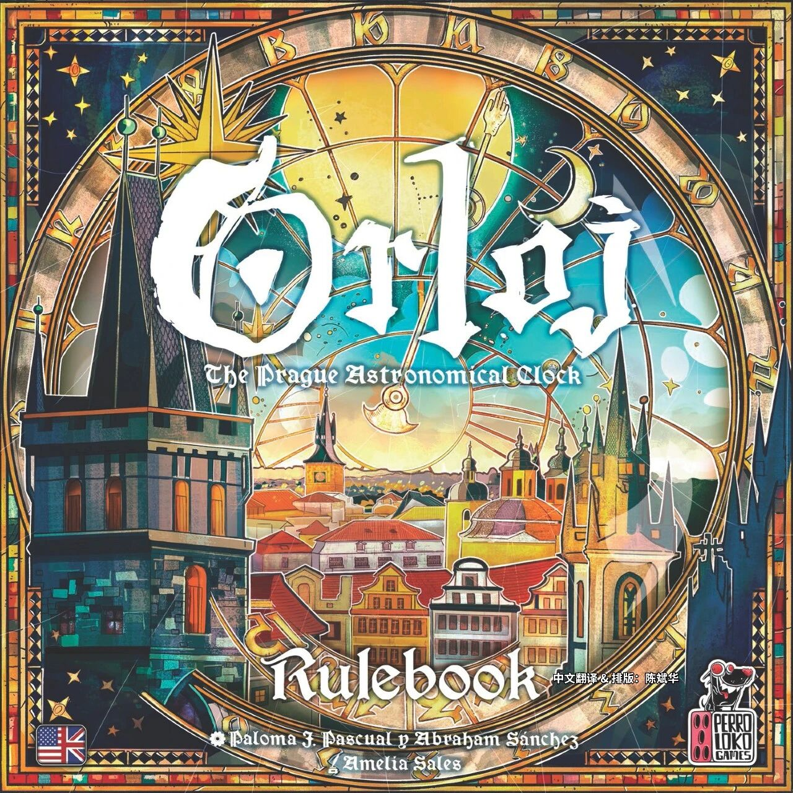
本页整理自微信公众号「桌游怎么玩」《奥洛伊 布拉格天文钟[Orloj The Prague Astronomical Clock]》发布的 Perro Loko Games《Orloj: The Prague Astronomical Clock》官方中文规则书（中文翻译：陈斌华，全书 24 页含封面封底），逐页全文转录，原书扫描图随文嵌入——点击任意图片即可放大查看。规则内容归 Perro Loko Games 及版权方所有，转录仅供个人学习查阅。
整理说明：原书官译用语（「奥尔洛伊」「使徒行走装置」「精通」「偏差」「金色公鸡」等）照录；正文称游戏名为「奥尔洛伊」，译者标题作「奥洛伊」，本页标题从译者题名。原书用词不一处均照录：「油漆/颜料」「钱币/硬币」「工作坊卡/工作室卡」「表盘/转盘」全书混用；P.7、P.13「拿拿取」重字，P.10「图标学」，P.15 两个「11.1.」小节标题，P.21 附录两个「1. 资源」小节标题，均为原书排印如此。P.4 版图左上数字牌无法完全确认是 53 还是 5.3；P.16 单人模式装饰件的小符号与 P.20 难度图标扫描分辨率下无法辨认，以〔符号〕〔困难符号〕占位。经人工逐页放大核对，存疑处两遍交叉验证。
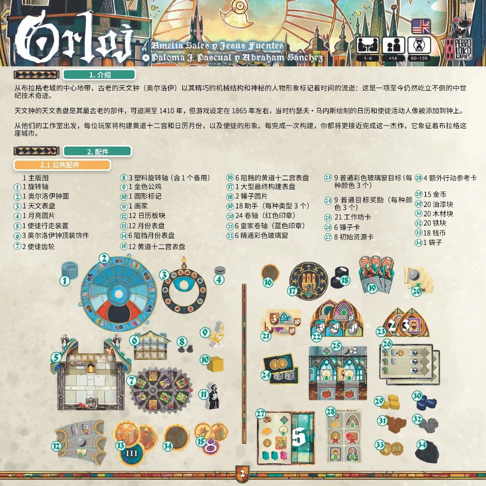
1. 介绍
从布拉格老城的中心地带，古老的天文钟（奥尔洛伊）以其精巧的机械结构和神秘的人物形象标记着时间的流逝：这是一项至今仍然屹立不倒的中世纪技术奇迹。
天文钟的天文表盘是其最古老的部件，可追溯到 1410 年，但游戏设定在 1865 年左右，当时约瑟夫·马内斯绘制的日历和使徒活动人像被添加到钟上。
从他们的工作室出发，每位玩家将构建黄道十二宫和日历月份，以及使徒的形象。每完成一次构建，你都将更接近完成这一杰作，它象征着布拉格这座城市。
2. 配件
2.1 公共配件
- 1 主版图
- ① 1 旋转轴
- ② 1 奥尔洛伊钟面
- ③ 1 天文表盘
- ④ 1 月亮圆片
- ⑤ 1 使徒行走装置
- ⑥ 3 奥尔洛伊钟顶装饰件
- ⑦ 2 使徒齿轮
- ⑧ 3 塑料旋转轴（含 1 个备用)
- ⑨ 1 金色公鸡
- ⑩ 1 圆形标记
- ⑪ 1 画家
- ⑫ 12 日历板块
- ⑬ 12 月份表盘
- ⑭ 6 阻挡月份表盘
- ⑮ 12 黄道十二宫表盘
- ⑯ 6 阻挡的黄道十二宫表盘
- ⑰ 1 大型最终构建表盘
- ⑱ 2 锤子圆片
- ⑲ 18 助手（每种类型 3 个)
- ⑳ 24 卷轴（红色印章)
- ㉑ 6 皇家卷轴（蓝色印章)
- ㉒ 6 精通彩色玻璃窗
- ㉓ 9 普通彩色玻璃窗目标（每种颜色 3 个)
- ㉔ 9 普通目标奖励（每种颜色 3 个)
- ㉕ 21 工作坊卡
- ㉖ 6 锤子卡
- ㉗ 8 初始资源卡
- ㉘ 4 额外行动参考卡
- ㉙ 15 金币
- ㉚ 20 油漆块
- ㉛ 20 木材块
- ㉜ 20 铁块
- ㉝ 18 钱币
- ㉞ 1 袋子
〔图清单下方为带圈号 1-㉞ 的组件实拍图，与上方清单编号一一对应，无额外规则文字〕
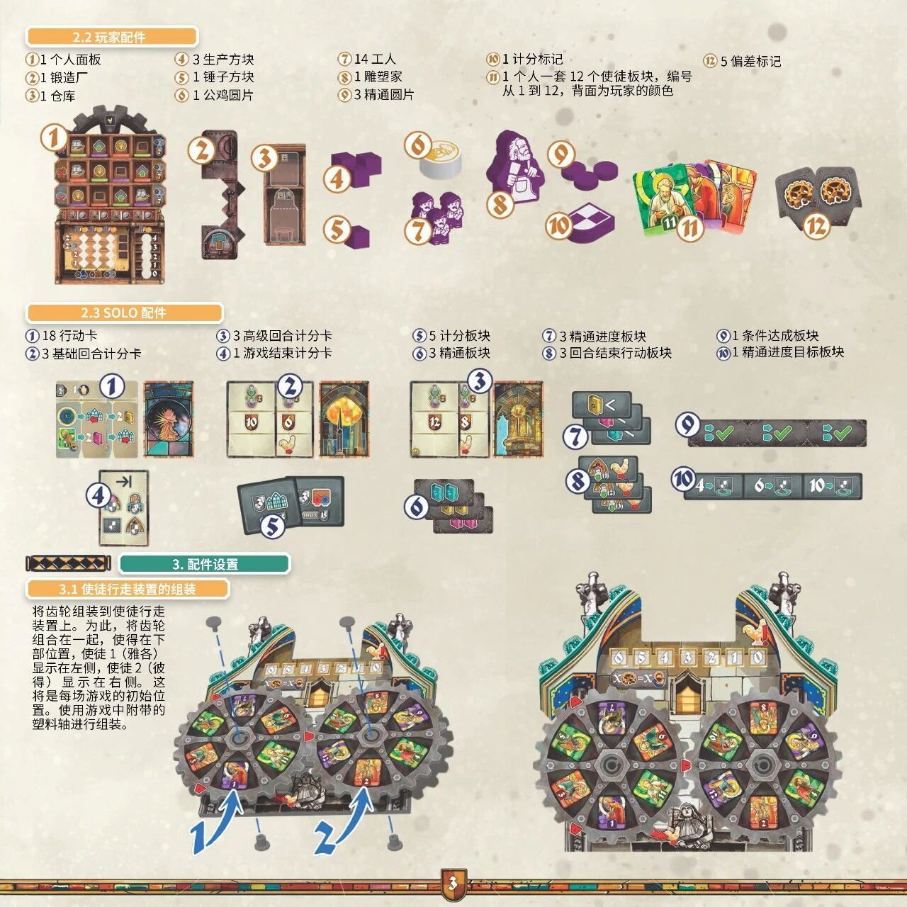
2.2 玩家配件
- ① 1 个人面板
- ② 1 锻造厂
- ③ 1 仓库
- ④ 3 生产方块
- ⑤ 1 锤子方块
- ⑥ 1 公鸡圆片
- ⑦ 14 工人
- ⑧ 1 雕塑家
- ⑨ 3 精通圆片
- ⑩ 1 计分标记
- ⑪ 1 个人一套 12 个使徒板块，编号从 1 到 12，背面为玩家的颜色
- ⑫ 5 偏差标记
〔图清单下方为带圈号 1-⑫ 的玩家配件实拍图，与上方清单编号一一对应，无额外规则文字〕
2.3 SOLO 配件
- ① 18 行动卡
- ② 3 基础回合计分卡
- ③ 3 高级回合计分卡
- ④ 1 游戏结束计分卡
- ⑤ 5 计分板块
- ⑥ 3 精通板块
- ⑦ 3 精通进度板块
- ⑧ 3 回合结束行动板块
- ⑨ 1 条件达成板块
- ⑩ 1 精通进度目标板块
〔图清单下方为带圈号 1-⑩ 的 SOLO 配件实拍图，与上方清单编号一一对应，无额外规则文字〕
3. 配件设置
3.1 使徒行走装置的组装
将齿轮组装到使徒行走装置上。为此，将齿轮组合在一起，使得在下部位置，使徒 1(雅各）显示在左侧，使徒 2(彼得）显示在右侧。这将是每场游戏的初始位置。使用游戏中附带的塑料轴进行组装。
〔图使徒行走装置组装示意图，图中蓝色箭头分别标注 1 和 2 指示两根塑料轴的安装位置;右侧为组装完成后的使徒行走装置整体照片〕
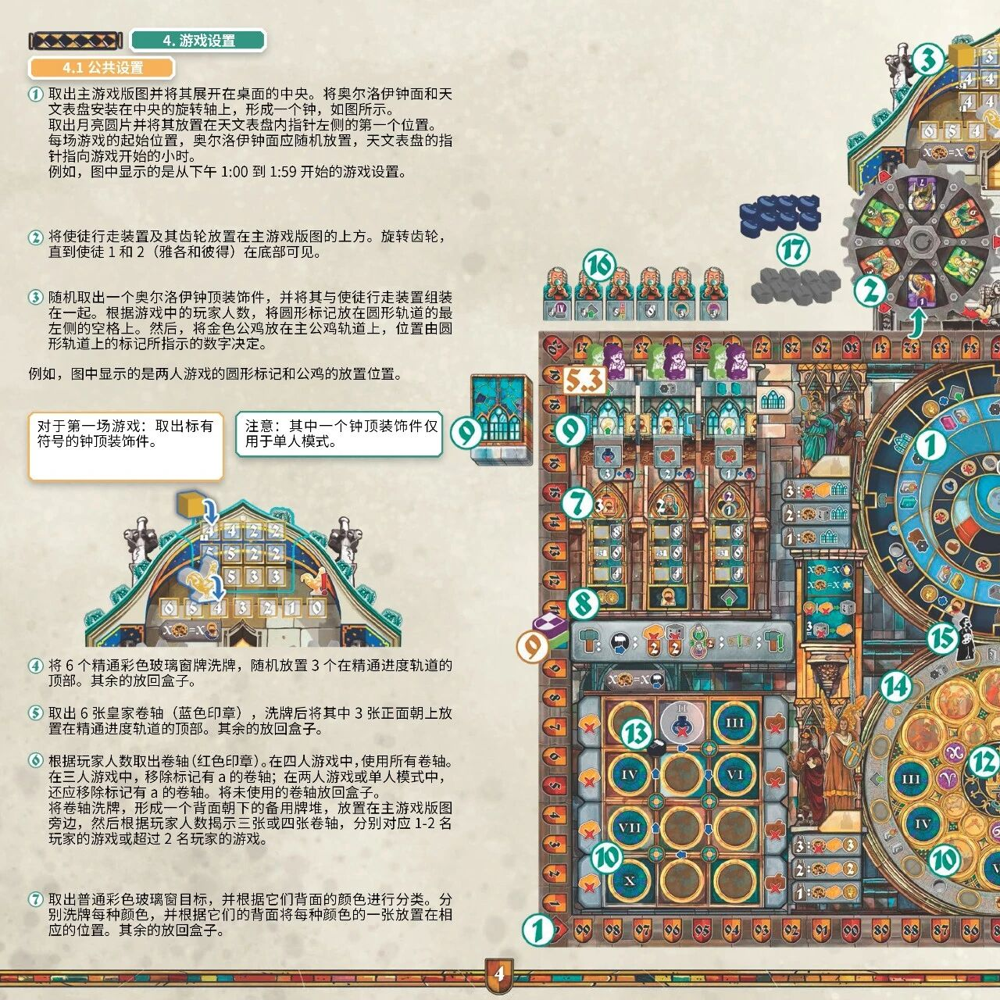
4. 游戏设置
4.1 公共设置
① 取出主游戏版图并将其展开在桌面的中央。将奥尔洛伊钟面和天文表盘安装在中央的旋转轴上，形成一个钟，如图所示。
取出月亮圆片并将其放置在天文表盘内指针左侧的第一个位置。
每场游戏的起始位置，奥尔洛伊钟面应随机放置，天文表盘的指针指向游戏开始的小时。
例如，图中显示的是从下午 1:00 到 1:59 开始的游戏设置。
〔图右侧整幅为组装完成的天文钟版图示意图，版图上用绿色圆圈编号标注各部件，可见编号 1、2、3、7、8、9、10、12、13、14、15、16、17（其中 9 与 10 各出现两处）；版图左上有一块白底数字牌「53」〔"5"与"3"之间似有一小点，无法完全确认是 53 还是 5.3〕。〕
② 将使徒行走装置及其齿轮放置在主游戏版图的上方。旋转齿轮，直到使徒 1 和 2（雅各和彼得）在底部可见。
③ 随机取出一个奥尔洛伊钟顶装饰件，并将其与使徒行走装置组装在一起。根据游戏中的玩家人数，将圆形标记放在圆形轨道的最左侧的空格上。然后，将金色公鸡放在主公鸡轨道上，位置由圆形轨道上的标记所指示的数字决定。
例如，图中显示的是两人游戏的圆形标记和公鸡的放置位置。
对于第一场游戏：取出标有符号的钟顶装饰件。
注意：其中一个钟顶装饰件仅用于单人模式。
〔图使徒行走装置组装示意图，装置上的标牌写有「x〔金色公鸡图标〕=x〔使徒图标〕」字样。〕
④ 将 6 个精通彩色玻璃窗牌洗牌，随机放置 3 个在精通进度轨道的顶部。其余的放回盒子。
⑤ 取出 6 张皇家卷轴（蓝色印章），洗牌后将其中 3 张正面朝上放置在精通进度轨道的顶部。其余的放回盒子。
⑥ 根据玩家人数取出卷轴（红色印章）。在四人游戏中，使用所有卷轴。在三人游戏中，移除标记有 a 的卷轴；在两人游戏或单人模式中，还应移除标记有 a 的卷轴。将未使用的卷轴放回盒子。
将卷轴洗牌，形成一个背面朝下的备用牌堆，放置在主游戏版图旁边，然后根据玩家人数揭示三张或四张卷轴，分别对应 1-2 名玩家的游戏或超过 2 名玩家的游戏。
⑦ 取出普通彩色玻璃窗目标，并根据它们背面的颜色进行分类。分别洗牌每种颜色，并根据它们的背面将每种颜色的一张放置在相应的位置。其余的放回盒子。
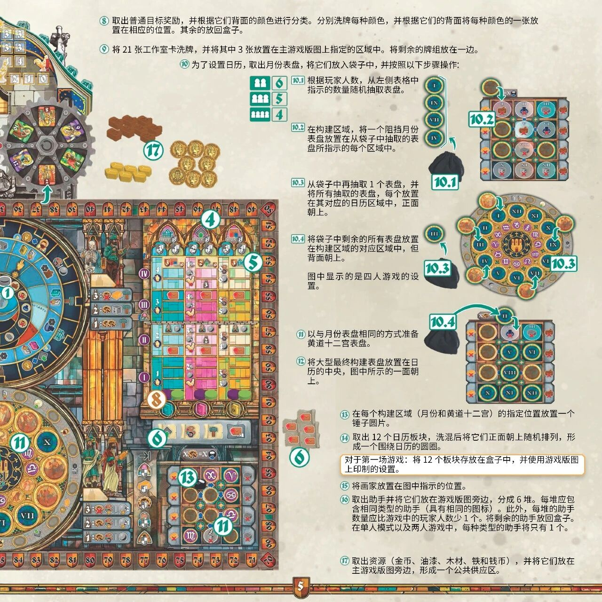
⑧ 取出普通目标奖励，并根据它们背面的颜色进行分类。分别洗牌每种颜色，并根据它们的背面将每种颜色的一张放置在相应的位置。其余的放回盒子。
⑨ 将 21 张工作室卡洗牌，并将其中 3 张放置在主游戏版图上指定的区域中。将剩余的牌组放在一边。
⑩ 为了设置日历，取出月份表盘，将它们放入袋子中，并按照以下步骤操作：
〔图左侧表格，三行，每行为玩家人数人头图标对应一个数字：〔2 个人头图标〕= 6；〔3 个人头图标〕= 5；〔4 个人头图标〕= 4。〕
10.1 根据玩家人数，从左侧表格中指示的数量随机抽取表盘。
10.2 在构建区域，将一个阻挡月份表盘放置在从袋子中抽取的表盘所指示的每个区域中。
〔图月份表盘示例（罗马数字 I、IX、VII、IV），以及带 10.2 标注的构建区域示意图（格内印罗马数字与红色叉号阻挡标记）。〕
10.3 从袋子中再抽取 1 个表盘，并将所有抽取的表盘，每个放置在其对应的日历区域中，正面朝上。
10.4 将袋子中剩余的所有表盘放置在构建区域的对应区域中，但背面朝上。
〔图日历轮盘示意图（轮上印罗马数字 I-XII 与黄道十二宫符号），旁有 10.1、10.3、10.4 标注及袋子图示。〕
图中显示的是四人游戏的设置。
⑪ 以与月份表盘相同的方式准备黄道十二宫表盘。
⑫ 将大型最终构建表盘放置在日历的中央，图中所示的一面朝上。
⑬ 在每个构建区域（月份和黄道十二宫）的指定位置放置一个锤子圆片。
⑭ 取出 12 个日历板块，洗混后将它们正面朝上随机排列，形成一个围绕日历的圆圈。
对于第一场游戏：将 12 个板块存放在盒子中，并使用游戏版图上印制的设置。
⑮ 将画家放置在图中指示的位置。
⑯ 取出助手并将它们放在游戏版图旁边，分成 6 堆。每堆应包含相同类型的助手（具有相同的图标）。此外，每堆的助手数量应比游戏中的玩家人数少 1 个。将剩余的助手放回盒子。
在单人模式以及两人游戏中，每种类型的助手将只有 1 个。
⑰ 取出资源（金币、油漆、木材、铁和钱币），并将它们放置在主游戏版图旁边，形成一个公共供应区。
〔图左侧延续上页的天文钟版图整图，绿色圆圈编号标注可见：1、4、5、6（两处）、8、11（两处）、13、17；图左侧另有使徒转轮照片与 17 号标注旁的木材、金币配件照片。〕
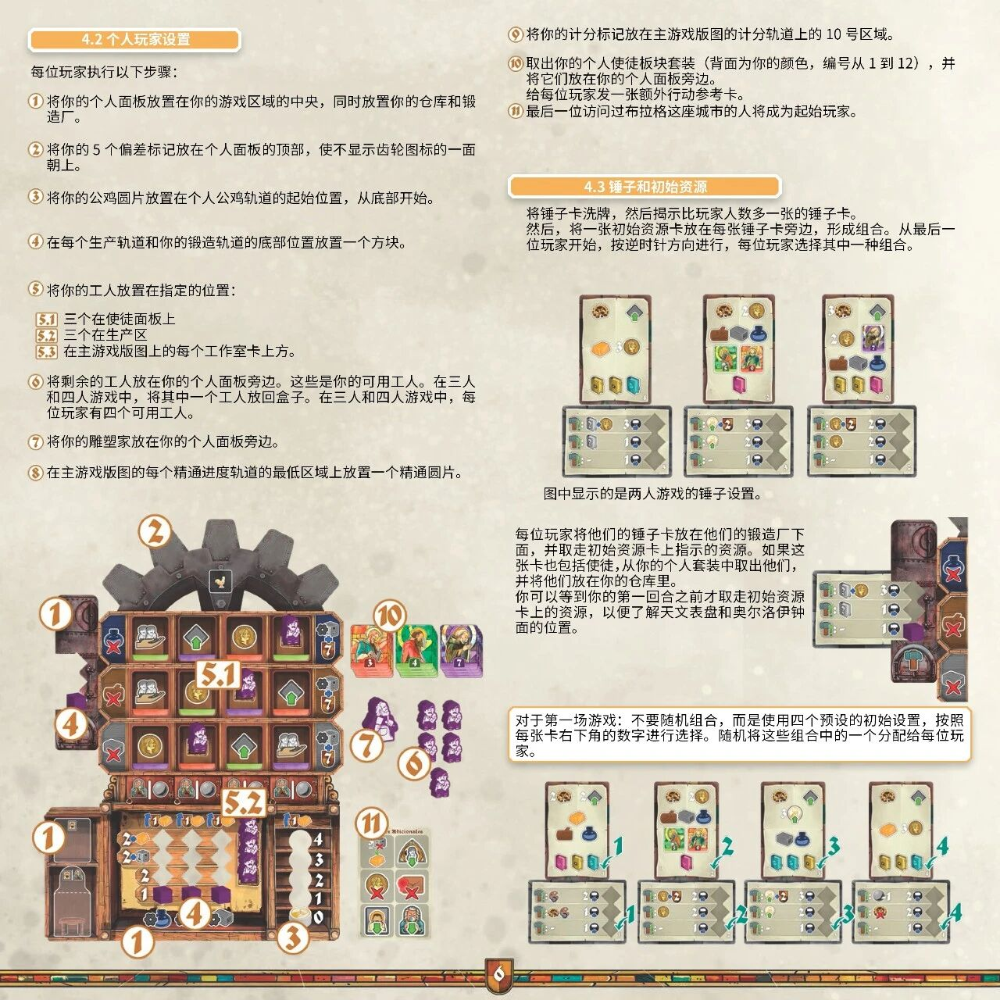
4.2 个人玩家设置
每位玩家执行以下步骤：
① 将你的个人面板放置在你的游戏区域的中央，同时放置你的仓库和锻造厂。
② 将你的 5 个偏差标记放在个人面板的顶部，使不显示齿轮图标的一面朝上。
③ 将你的公鸡圆片放置在个人公鸡轨道的起始位置，从底部开始。
④ 在每个生产轨道和你的锻造轨道的底部位置放置一个方块。
⑤ 将你的工人放置在指定的位置：
- 5.1 三个在使徒面板上
- 5.2 三个在生产区
- 5.3 在主游戏版图上的每个工作室卡上方。
⑥ 将剩余的工人放在你的个人面板旁边。这些是你的可用工人。在三人和四人游戏中，将其中一个工人放回盒子。在三人和四人游戏中，每位玩家有四个可用工人。
⑦ 将你的雕塑家放在你的个人面板旁边。
⑧ 在主游戏版图的每个精通进度轨道的最低区域上放置一个精通圆片。
〔图个人面板与主游戏版图的设置完成示例，各处用数字圆牌标注对应上述步骤的位置〕
⑨ 将你的计分标记放在主游戏版图的计分轨道上的 10 号区域。
⑩ 取出你的个人使徒板块套装（背面为你的颜色，编号从 1 到 12），并将它们放在你的个人面板旁边。
给每位玩家发一张额外行动参考卡。
⑪ 最后一位访问过布拉格这座城市的人将成为起始玩家。
4.3 锤子和初始资源
将锤子卡洗牌，然后揭示比玩家人数多一张的锤子卡。
然后，将一张初始资源卡放在每张锤子卡旁边，形成组合。从最后一位玩家开始，按逆时针方向进行，每位玩家选择其中一种组合。
〔图锤子卡与初始资源卡组成的组合示例〕图中显示的是两人游戏的锤子设置。
每位玩家将他们的锤子卡放在他们的锻造厂下面，并取走初始资源卡上指示的资源。如果这张卡也包括使徒，从你的个人套装中取出他们，并将他们放在你的仓库里。
你可以等到你的第一回合之前才取走初始资源卡上的资源，以便了解天文表盘和奥尔洛伊钟面的位置。
对于第一场游戏：不要随机组合，而是使用四个预设的初始设置，按照每张卡右下角的数字进行选择。随机将这些组合中的一个分配给每位玩家。
〔图四个预设初始设置示例，分别标注数字 1、2、3、4〕
5. 一般概念
5.1. 即时胜利点数和游戏结束胜利点数
在游戏中，有两种计分方式：即时计分和游戏结束时计分。从现在开始，我们将把胜利点数称为 VP(Victory Points）。
〔图橙色盾形图标〕这个图标表示这种计分是立即结算的。根据图标指示的数字，将你的标记在计分轨道上向前移动相应的格数。
〔图灰色盾形图标〕这个图标表示这种计分是在游戏结束时解决的。暂时不要移动你的标记。
将你的计分标记翻转，以表示超过 100 VP 的分数。
资源
〔图两排资源图标示例，第二排为带红色 X 的划掉图标〕
在奥尔洛伊中，有不同类型的资源。一个资源图标表示你从公共供应区拿拿取〔原文如此，原书重印“拿”字〕一个资源并将其放置在你的游戏区域中。相反，当你看到一个带有 ""〔原文此处为一对引号状符号，疑为图标占位〕的划掉的资源图标时，它表示你需要支付的成本，即把指定的资源放回公共供应区。
〔图金币图标〕从公共供应区拿拿取〔原文如此〕一个金币并将其放置在你的个人储备中。〔图金币带红色 X 图标〕支付一个金币。将其放回公共供应区。
5.2.1. 基础资源
油漆、木材和铁是游戏中的基础资源。
〔图问号方块图标〕这个图标相当于你选择的一种基础资源：油漆、木材或铁。
5.2.2. 特殊资源
〔图人物肖像（街头老者）〕由于奥尔洛伊的黄金元素，黄金是游戏中建筑的重要资源。另一方面，钱币代表金钱，与精通进度轨道有关。布拉格的查尔斯大学是欧洲最古老的大学之一，只有最富有的阶层才能进入。
在《奥尔洛伊》中，金币和钱币是特殊的资源。你可以用一种特殊资源代替任何一种基础资源来支付。然而，你不能用钱币代替金币支付，反之亦然。
〔图金币（划掉）与钱币（划掉）兑换为一个问号方块的图示〕
你也可以通过基础资源获得金币。你可以用三个相同的基础资源兑换一个金币。你可以在你的回合中任何时候进行这种兑换。
〔图三个相同基础资源（划掉）兑换为一个金币的图示〕
5.3. 偏差标记
〔图人物肖像（钟表匠）〕钟表的建造是一个精细的过程，但有时你必须强迫机制，稍后加以纠正。通过强迫偏差，你将能够在游戏的移动部件中进行超出允许范围的额外移动，或者满足某些行动所需的条件。然而，要小心——这些标记也可能在公鸡报时期间导致你失去分数。
〔图齿轮图标〕强迫偏差：这个图标表示你必须翻转你的一张偏差标记，露出破损齿轮图标。
每位玩家在他们的面板上有 5 个偏差标记可用。如果所有标记都已经显示了破损齿轮图标，你不能强迫偏差。
每当一个强迫偏差图标出现在一个行动旁边时，你必须先强迫偏差，然后才能执行该行动。
〔图齿轮带红色 X 图标〕纠正偏差：这个图标表示你可以将一张偏差标记翻回去，隐藏破损齿轮图标。
5.4 工人
奥尔洛伊中的一个关键机制是工人管理。如果在游戏中任何时候，你没有可用的工人，你将被迫跳过你的回合，或者寻找其他方法来解锁或恢复新的工人。
5.4.1. 恢复工人
当你恢复工人时，你可以取回那些在钟表或日历上使用过的工人，使他们再次可用。
注意：通常，工人只从钟表上恢复。从日历上恢复他们可能会导致在游戏结束时获得较少的 VP。
- 〔图手托 1 个工人图标〕恢复 1 个工人
- 〔图手托 2 个工人图标〕恢复 2 个工人
- 〔图手托 3 个工人图标〕恢复指定数量的工人。
5.4.2. 解锁新工人
在游戏开始时，你从一组可用工人开始。然而，在游戏过程中，你将能够解锁新工人，并将他们放在你的个人面板旁边作为可用工人。解锁工人的方法将在各自的章节中解释：
- 从使徒面板解锁工人。参见第 10.1 节，放置使徒在第 14 页。
- 从工作室卡解锁工人。参见第 8.7 节，扩展工作室在第 12 页。
- 在生产区解锁工人。参见第 8.6 节，执行升级在第 11 页。
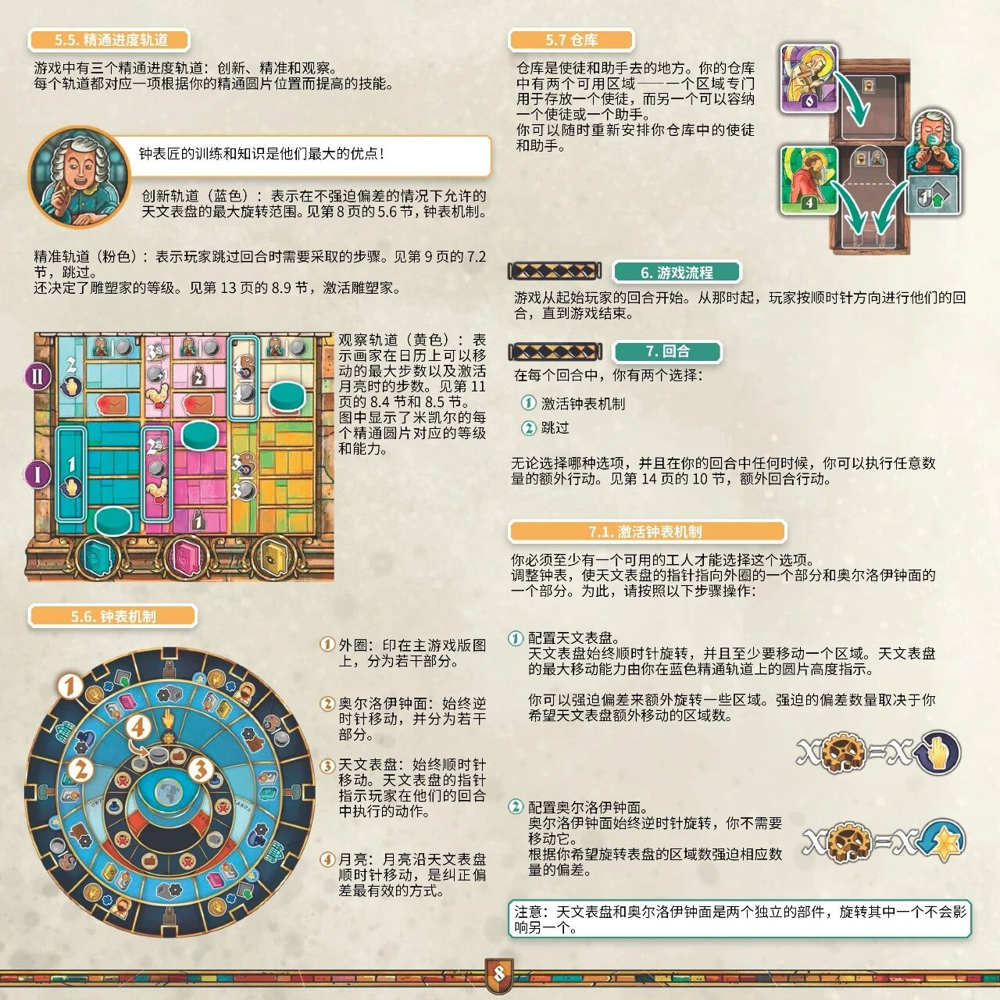
5.5. 精通进度轨道
游戏中有三个精通进度轨道：创新、精准和观察。每个轨道都对应一项根据你的精通圆片位置而提高的技能。
〔图钟表匠人物头像及对话气泡〕钟表匠的训练和知识是他们最大的优点!
创新轨道（蓝色):表示在不强迫偏差的情况下允许的天文表盘的最大旋转范围。见第8页的5.6节，钟表机制。
精准轨道（粉色):表示玩家跳过回合时需要采取的步骤。见第9页的7.2节，跳过。
还决定了雕塑家的等级。见第13页的8.9节，激活雕塑家。
〔图玩家版图照片，左缘标注罗马数字 II、I，展示米凯尔的精通圆片位置〕
观察轨道（黄色):表示画家在日历上可以移动的最大步数以及激活月亮时的步数。见第11页的8.4节和8.5节。图中显示了米凯尔的每个精通圆片对应的等级和能力。
5.6. 钟表机构
〔图钟表机构分解示意图，按①—④标注各部件〕
1. 外圈：印在主游戏版图上，分为若干部分。
2. 奥尔洛伊钟面：始终逆时针移动，并分为若干部分。
3. 天文表盘：始终顺时针移动。天文表盘的指针指示玩家在他们的回合中执行的动作。
4. 月亮：月亮沿天文表盘顺时针移动，是纠正偏差最有效的方式。
5.7 仓库
仓库是使徒和助手去的地方。你的仓库中有两个可用区域——一个区域专门用于存放一个使徒，而另一个可以容纳一个使徒或一个助手。
你可以随时重新安排你仓库中的使徒和助手。
〔图仓库照片——紫色使徒卡（数值6）、绿色使徒卡（数值4）与助手（盾牌1、绿色向上箭头）放入仓库两个区域的示例〕
6. 游戏流程
游戏从起始玩家的回合开始。从那时起，玩家按顺时针方向进行他们的回合，直到游戏结束。
7. 回合
在每个回合中，你有两个选择：
1. 激活钟表机制
2. 跳过
无论选择哪种选项，并且在你的回合中任何时候，你可以执行任意数量的额外行动。见第14页的10节，额外回合行动。
7.1. 激活钟表机制
你必须至少有一个可用的工人才能选择这个选项。
调整钟表，使天文表盘的指针指向外圈的一个部分和奥尔洛伊钟面的一个部分。为此，请按照以下步骤操作：
1. 配置天文表盘。
天文表盘始终顺时针旋转，并且至少要移动一个区域。天文表盘的最大移动能力由你在蓝色精通轨道上的圆片高度指示。
你可以强迫偏差来额外旋转一些区域。强迫的偏差数量取决于你希望天文表盘额外移动的区域数。
〔图图标等式——X个齿轮图标 = X个"金色手指+深蓝顺时针环形箭头"图标〕
2. 配置奥尔洛伊钟面。
奥尔洛伊钟面始终逆时针旋转，你不需要移动它。
根据你希望旋转表盘的区域数强迫相应数量的偏差。
〔图图标等式——X个齿轮图标 = X个"金色星形+蓝色逆时针环形箭头"图标〕
注意：天文表盘和奥尔洛伊钟面是两个独立的部件，旋转其中一个不会影响另一个。
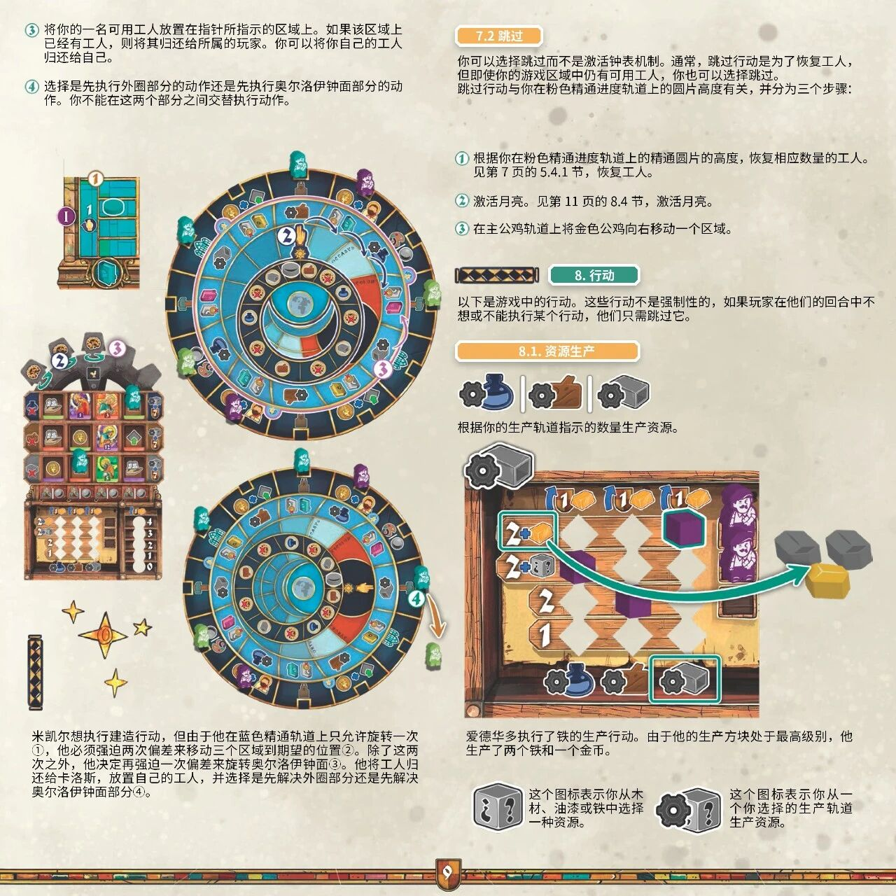
3. 将你的一名可用工人放置在指针所指示的区域上。如果该区域上已经有工人，则将其归还给所属的玩家。你可以将你自己的工人归还给自己。
4. 选择是先执行外圈部分的动作还是先执行奥尔洛伊钟面部分的动作。你不能在这两个部分之间交替执行动作。
〔图玩家版图与钟表机构示例照片，①—④圆圈数字标注文中所述步骤对应的位置〕
米凯尔想执行建造行动，但由于他在蓝色精通轨道上只允许旋转一次①，他必须强迫两次偏差来移动三个区域到期望的位置②。除了这两次之外，他决定再强迫一次偏差来旋转奥尔洛伊钟面③。他将工人归还给卡洛斯，放置自己的工人，并选择是先解决外圈部分还是先解决奥尔洛伊钟面部分④。
7.2 跳过
你可以选择跳过而不是激活钟表机制。通常，跳过行动是为了恢复工人，但即使你的游戏区域中仍有可用工人，你也可以选择跳过。
跳过行动与你在粉色精通进度轨道上的圆片高度有关，并分为三个步骤：
1. 根据你在粉色精通进度轨道上的精通圆片的高度，恢复相应数量的工人。见第7页的5.4.1节，恢复工人。
2. 激活月亮。见第11页的8.4节，激活月亮。
3. 在主公鸡轨道上将金色公鸡向右移动一个区域。
8. 行动
以下是游戏中的行动。这些行动不是强制性的，如果玩家在他们的回合中不想或不能执行某个行动，他们只需跳过它。
8.1. 资源生产
〔图三个资源图标，以竖线分隔——齿轮+蓝色油漆瓶、齿轮+木材、齿轮+石材〕
根据你的生产轨道指示的数量生产资源。
〔图生产轨道版图照片——行标签自上而下为"2+金币""2+『?』方块""2""1"，底部为齿轮+油漆、齿轮+木材、齿轮+石材三个图标（齿轮+石材被绿框标出），紫色生产方块位于最高一行，绿色箭头指向产出的两个灰色铁块和一个金币〕
爱德华多执行了铁的生产行动。由于他的生产方块处于最高级别，他生产了两个铁和一个金币。
〔图带问号的方块图标〕这个图标表示你从木材、油漆或铁中选择一种资源。
〔图齿轮+带问号的方块图标〕这个图标表示你从一个你选择的生产轨道生产资源。
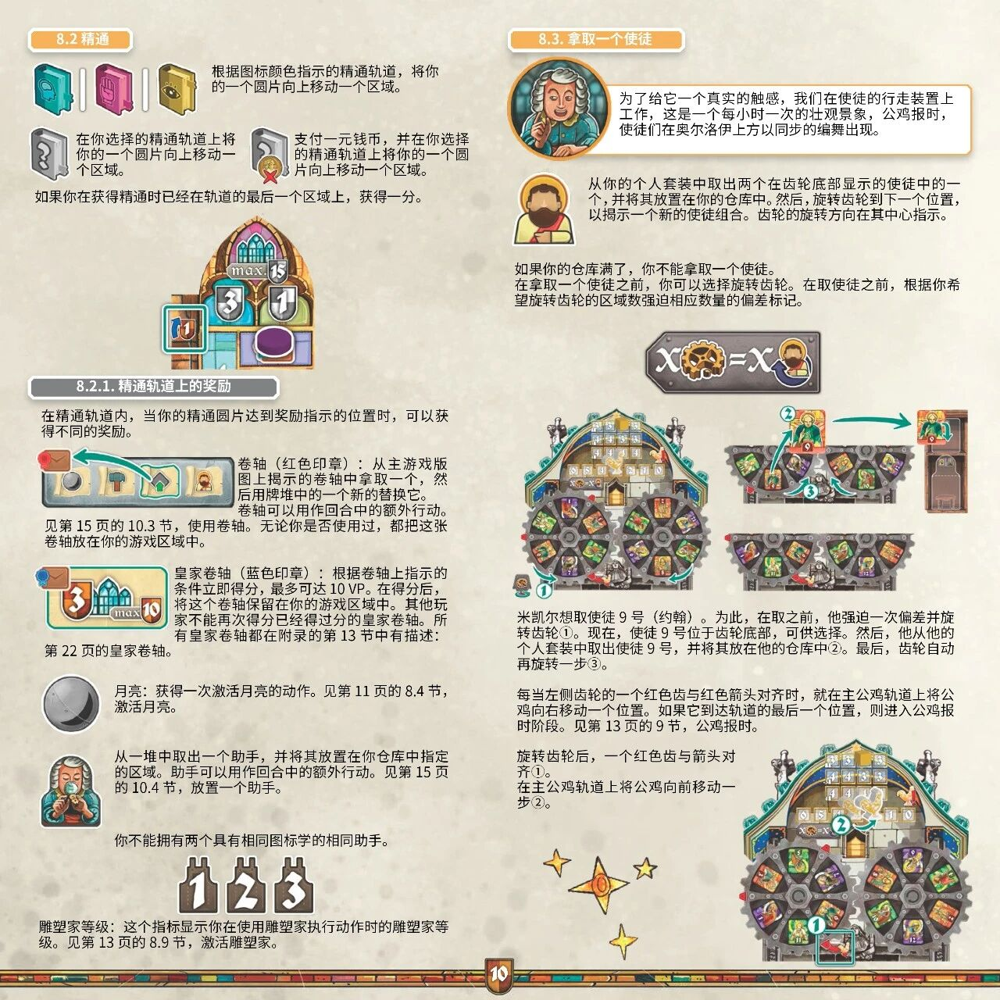
8.2 精通
- 根据图标颜色指示的精通轨道，将你的一个圆片向上移动一个区域。
- 在你选择的精通轨道上将你的一个圆片向上移动一个区域。
- 支付一元钱币，并在你选择的精通轨道上将你的一个圆片向上移动一个区域。
如果你在获得精通时已经在轨道的最后一个区域上，获得一分。
〔图精通轨道示例——教堂建筑上的两个精通圆片"3""1"与"max. 5"标记〕
8.2.1. 精通轨道上的奖励
在精通轨道内，当你的精通圆片达到奖励指示的位置时，可以获得不同的奖励。
- 卷轴（红色印章):从主游戏版图上揭示的卷轴中拿取一个，然后用牌堆中的一个新的替换它。卷轴可以用作回合中的额外行动。见第 15 页的 10.3 节，使用卷轴。无论你是否使用过，都把这张卷轴放在你的游戏区域中。
- 〔图皇家卷轴图标——盾牌"3"、教堂与"max 10"〕皇家卷轴（蓝色印章):根据卷轴上指示的条件立即得分，最多可达 10 VP。在得分后，将这个卷轴保留在你的游戏区域中。其他玩家不能再次得分已经得过分的皇家卷轴。所有皇家卷轴都在附录的第 13 节中有描述：第 22 页的皇家卷轴。
- 月亮：获得一次激活月亮的动作。见第 11 页的 8.4 节，激活月亮。
- 从一堆中取出一个助手，并将其放置在你仓库中指定的区域。助手可以用作回合中的额外行动。见第 15 页的 10.4 节，放置一个助手。
你不能拥有两个具有相同图标学的相同助手。
〔图三个木制助手标记，数字分别为 1、2、3〕
雕塑家等级：这个指标显示你在使用雕塑家执行动作时的雕塑家等级。见第 13 页的 8.9 节，激活雕塑家。
8.3. 拿取一个使徒
〔图老者头像旁的引文框〕
为了给它一个真实的触感，我们在使徒的行走装置上工作，这是一个每小时一次的壮观景象，公鸡报时，使徒们在奥尔洛伊上方以同步的编舞出现。
从你的个人套装中取出两个在齿轮底部显示的使徒中的一个，并将其放置在你的仓库中。然后，旋转齿轮到下一个位置，以揭示一个新的使徒组合。齿轮的旋转方向在其中心指示。
如果你的仓库满了，你不能拿取一个使徒。
在拿取一个使徒之前，你可以选择旋转齿轮。在取使徒之前，根据你希望旋转齿轮的区域数强迫相应数量的偏差标记。
〔图金属牌图标"X 齿轮 = X 使徒"〕
〔图齿轮与使徒版图示例，标注①②③〕
米凯尔想取使徒 9 号（约翰）。为此，在取之前，他强迫一次偏差并旋转齿轮①。现在，使徒 9 号位于齿轮底部，可供选择。然后，他从他的个人套装中取出使徒 9 号，并将其放在他的仓库中②。最后，齿轮自动再旋转一步③。
每当左侧齿轮的一个红色齿与红色箭头对齐时，就在主公鸡轨道上将公鸡向右移动一个位置。如果它到达轨道的最后一个位置，则进入公鸡报时阶段。见第 13 页的 9 节，公鸡报时。
旋转齿轮后，一个红色齿与箭头对齐①。
在主公鸡轨道上将公鸡向前移动一步②。
〔图齿轮与主公鸡轨道示例，标注①②〕
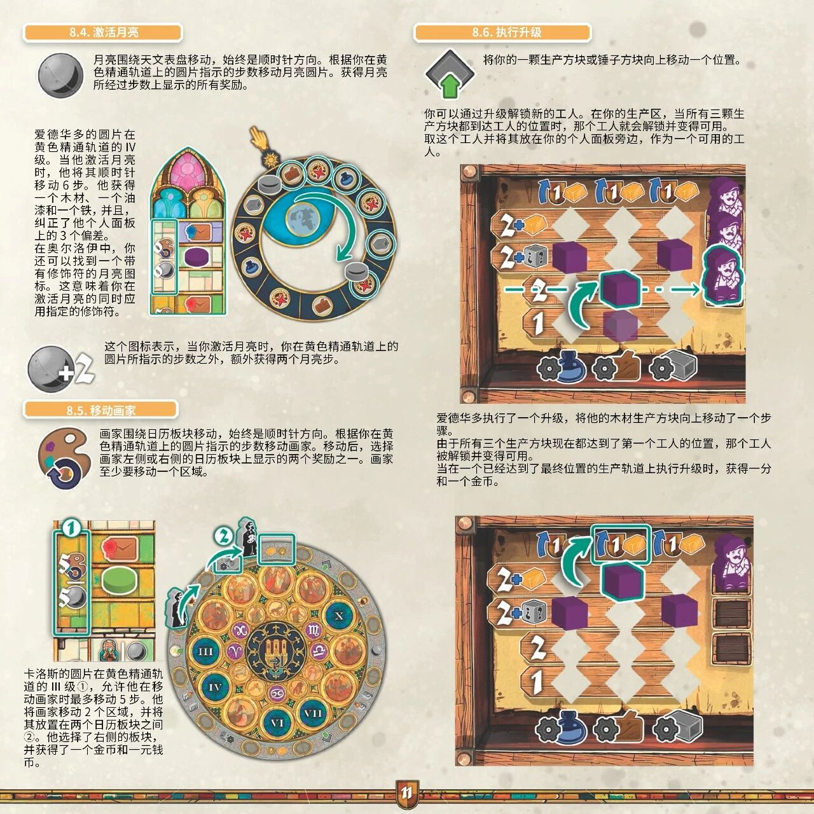
8.4. 激活月亮
月亮围绕天文表盘移动，始终是顺时针方向。根据你在黄色精通轨道上的圆片指示的步数移动月亮圆片。获得月亮所经过步数上显示的所有奖励。
〔图天文表盘与月亮圆片顺时针移动示意〕
爱德华多的圆片在黄色精通轨道的 IV 级。当他激活月亮时，他将其顺时针移动 6 步。他获得一个木材、一个油漆和一个铁，并且，纠正了他个人面板上的 3 个偏差。
在奥尔洛伊中，你还可以找到一个带有修饰符的月亮图标。这意味着你在激活月亮的同时应用指定的修饰符。
〔图月亮"+2"图标〕
这个图标表示，当你激活月亮时，你在黄色精通轨道上的圆片所指示的步数之外，额外获得两个月亮步。
8.5. 移动画家
画家围绕日历板块移动，始终是顺时针方向。根据你在黄色精通轨道上的圆片指示的步数移动画家。移动后，选择画家左侧或右侧的日历板块上显示的两个奖励之一。画家至少要移动一个区域。
〔图画家移动示例——玩家板黄色精通轨道处标注①，画家放在两个日历板块之间标注②〕
卡洛斯的圆片在黄色精通轨道的 III 级①，允许他在移动画家时最多移动 5 步。他将画家移动 2 个区域，并将其放置在两个日历板块之间②。他选择了右侧的板块，并获得了一个金币和一元钱币。
8.6. 执行升级
将你的一颗生产方块或锤子方块向上移动一个位置。
你可以通过升级解锁新的工人。在你的生产区，当所有三颗生产方块都到达工人的位置时，那个工人就会解锁并变得可用。取这个工人并将其放在你的个人面板旁边，作为一个可用的工人。
〔图生产区示例——生产轨道成本标注"2+"(金币）、"2+"(问号骰）、"2"、"1"，顶部为"1"级升级奖励，右侧为工人立牌〕
爱德华多执行了一个升级，将他的木材生产方块向上移动了一个步骤。
由于所有三个生产方块现在都达到了第一个工人的位置，那个工人被解锁并变得可用。
当在一个已经达到了最终位置的生产轨道上执行升级时，获得一分和一个金币。
〔图第二张生产区示例图——成本标注"2+""2+""2""1"，顶部"1"级升级奖励被高亮〕
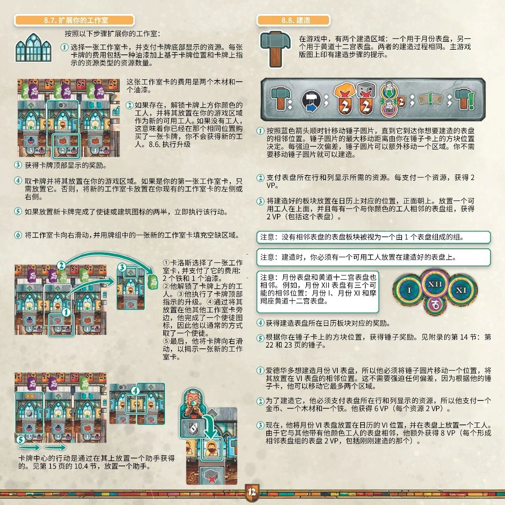
8.7. 扩展你的工作室
按照以下步骤扩展你的工作室：
① 选择一张工作室卡，并支付卡牌底部显示的资源。每张卡牌的费用包括一种油漆加上基于卡牌位置和卡牌上指示的资源类型的资源数量。
〔图工作室卡列照片，中间一张工作室卡被框出，顶部有费用图标与数字〕这张工作室卡的费用是两个木材和一个油漆。
② 如果存在，解锁卡牌上方你颜色的工人，并将其放置在你的游戏区域作为新的可用工人。如果没有工人，这意味着你已经在那个相同位置购买了一张卡牌，你不会获得新的工人。8.6. 执行升级
③ 获得卡牌顶部显示的奖励。
④ 取卡牌并将其放置在你的游戏区域。如果是你的第一张工作室卡，只需放置它。否则，将新的工作室卡放置在你现有的工作室卡的左侧或右侧。
⑤ 如果放置新卡牌完成了使徒或建筑图标的两半，立即执行该行动。
⑥ 将工作室卡向右滑动，并用牌组中的一张新的工作室卡填补空缺区域。
〔图示例图，工作室卡列与新放入的卡，标注①—⑤〕
①卡洛斯选择了一张工作室卡，并支付了它的费用：2 个铁和 1 个油漆。②他解锁了卡牌上方的工人。③他执行了卡牌顶部指示的升级。④通过将其放置在他其他工作室卡旁边，他完成了一个使徒图标，因此他以通常的方式取了一个使徒。⑤最后，他将卡牌向右滑动，以揭示一张新的工作室卡。
〔图示例图，左为滑动后的工作室卡列（标注⑤），中为两张相邻的工作室卡（标注④），右为一个助手轮廓、带数字 6 的盾牌图标与指向一张工作室卡上新获得的使徒图标的箭头〕卡牌中心的行动是通过在其上放置一个助手获得的。见第 15 页的 10.4 节，放置一个助手。
8.8. 建造
在游戏中，有两个建造区域：一个用于月份表盘，另一个用于黄道十二宫表盘。两者的建造过程相同。主游戏版图上印有建造步骤的提示。
〔图主游戏版图上的建造步骤提示条：锤子图标、带蓝色箭头的锤子图标、两个带数字 2 的图标、工人图标与 2、日历板块与感叹号、绿色锤子图标〕
① 按照蓝色箭头顺时针移动锤子圆片，直到它到达你想要建造的表盘的相邻位置。锤子圆片的最大移动距离由你在锤子卡上的方块位置决定。每强迫一次偏差，锤子圆片可以额外移动一个区域。你不需要移动锤子圆片就可以建造。
② 支付表盘所在行和列显示所需的资源。每支付一个资源，获得 2 VP。
③ 将建造好的板块放置在日历上对应的位置，正面朝上。放置一个可用工人在上面，并且每有一个与你颜色的工人相邻的表盘组，获得 2 VP(包括这个表盘）。
注意：没有相邻表盘的表盘板块被视为一个由 1 个表盘组成的组。
注意：建造时，你必须有一个可用工人放置在建造好的表盘上。
注意：月份表盘和黄道十二宫表盘也相邻。例如，月份 XII 表盘有三个可能的相邻位置：月份 I、月份 XI 和摩羯座黄道十二宫表盘。
〔图I、XII、XI 三个表盘圆片相邻摆放，下方为摩羯座符号〕
④ 获得建造表盘所在日历板块对应的奖励。
⑤ 根据你在锤子卡上的方块位置，获得锤子奖励。见附录的第 14 节：第 22 和 23 页的锤子。
〔图爱德华多建造示例，无图注文字，仅编号段落〕
① 爱德华多想建造月份 VI 表盘，所以他必须将锤子圆片移动一个位置，将其放置在 VI 表盘的相邻位置。这不需要强迫任何偏差，因为根据他的锤子卡，他可以移动它最多两个区域。
② 为了建造它，他必须支付表盘所在行和列显示的资源，所以他支付一个金币、一个木材和一个铁。他获得 6 VP(每个资源 2 VP）。
③ 现在，他将月份 VI 表盘放置在日历的 VI 位置，并在表盘上放置一个工人。由于它与其他带有他颜色工人的表盘相邻，他额外获得 8 VP(每个形成相邻表盘组的表盘 2 VP，包括刚刚建造的那个）。
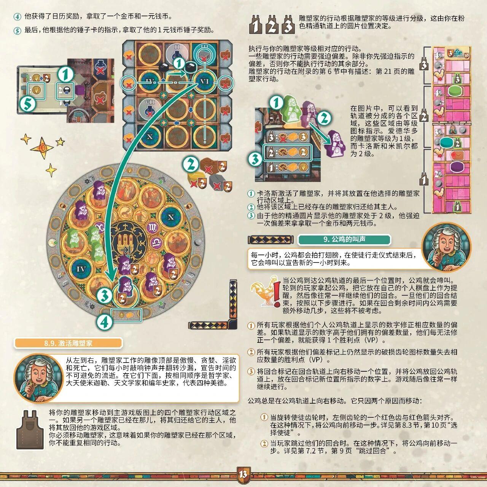
④ 他获得了日历奖励，拿取了一个金币和一元钱币。
⑤ 最后，他根据他的锤子卡的指示，拿取了他的 1 元钱币锤子奖励。
〔图爱德华多建造示例配图：锤子卡特写（标注⑤）、日历行列表格与月份 VI 表盘（标注①）、公鸡轨道段与锤子圆片（标注②）、天文钟盘面与雕塑圆片（标注③、④，框出一枚金币和一枚钱币）〕
8.9. 激活雕塑家
〔图雕塑家肖像〕从左到右，雕塑家工作的雕像顶部是傲慢、贪婪、淫欲和死亡，它们每小时敲响钟声并翻转沙漏，宣告时间的不可避免的流逝。在它们下面，按相同顺序是哲学家、大天使米迦勒、天文学家和编年史家，代表四种美德。
〔图围裙图标〕将你的雕塑家移动到主游戏版图上的四个雕塑家行动区域之一。如果另一个雕塑家已经在那儿，将其归还给它的主人，他将其放回他的游戏区域。
你必须移动雕塑家，这意味着如果你的雕塑家已经在那个区域，你不能重复相同的行动。
(右栏续)
〔图围裙等级图标 1、2、3〕雕塑家的行动根据雕塑家的等级进行分级，这由你在粉色精通轨道上的圆片位置决定。
执行与你的雕塑家等级相对应的行动。
一些雕塑家的行动需要强迫偏差。除非你先强迫指示的偏差，否则你不能执行行动的其余部分。
雕塑家的行动在附录的第 6 节中有描述：第 21 页的雕塑家行动。
〔图粉色精通轨道照片，左侧有围裙等级图标 3、2、1;雕塑家轨道特写，标注①—③〕在图片中，可以看到轨道被分成的各个区域，这些区域由等级图标指示。爱德华多的雕塑家等级为 1 级，而卡洛斯和米凯尔都为 2 级。
① 卡洛斯激活了雕塑家，并将其放置在他选择的雕塑家行动区域上。
② 他将该区域上已经存在的雕塑家归还给其主人。
③ 由于他的精通圆片显示他的雕塑家处于 2 级，他强迫一次偏差来拿拿取一个金币和两元钱币。
9. 公鸡的叫声
〔图公鸡肖像〕
每一小时，公鸡都会拍打翅膀，在使徒行走仪式结束后，它会啼叫以宣告新的一小时到来。
〔图警告框，公鸡与感叹号图标〕当公鸡到达公鸡轨道的最后一个位置时，公鸡就会啼叫。轮到的玩家拿起公鸡，把它放在自己的个人棋盘上作为提醒，然后像往常一样继续他们的回合。一旦他们的回合结束，按照以下步骤进行。如果在回合剩余时间内公鸡需要额外移动几步，这些将不被考虑。
① 所有玩家根据他们个人公鸡轨道上显示的数字修正相应数量的偏差。如果轨道显示的数字高于他们拥有的偏差数量，他们每无法修正一个偏差，就能获得 1 个胜利点（VP）。
② 所有玩家根据他们偏差标记上仍然显示的破损齿轮图标数量失去相应数量的胜利点（VP）。
③ 将回合标记在回合轨道上向右移动一个位置，并将公鸡放回公鸡轨道上，放在回合标记新位置所指示的数字上。游戏随后像往常一样继续进行。
公鸡总是在公鸡轨道上向右移动。它只因两个原因而移动：
① 当旋转使徒齿轮时，左侧齿轮的一个红色齿与红色箭头对齐。在这种情况下，将公鸡向前移动一步。详见第 8.3 节，第 10 页“选择使徒”。
② 当玩家跳过他们的回合时。在这种情况下，将公鸡向前移动一步。详见第 7.2 节，第 9 页“跳过回合”。
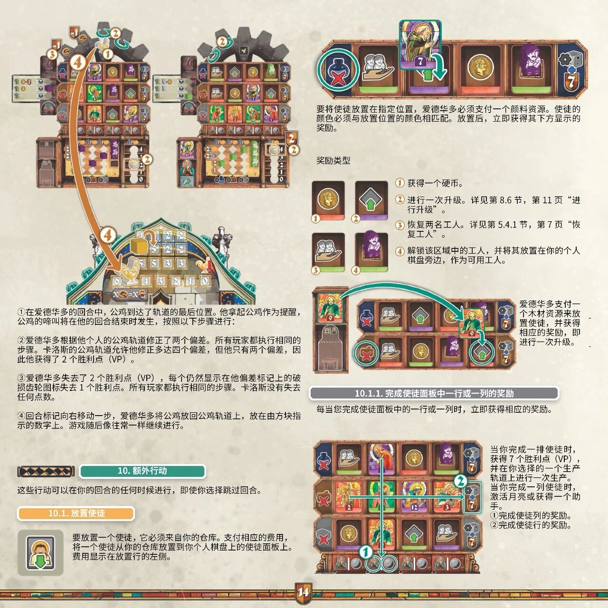
〔图两名玩家的个人棋盘顶部（公鸡齿轮轨道）与天文钟表盘示例图，图上标有带圈步骤序号①②③④，与下文步骤对应〕
①在爱德华多的回合中，公鸡到达了轨道的最后位置。他拿起公鸡作为提醒，公鸡的啼叫将在他的回合结束时发生，按照以下步骤进行：
②爱德华多根据他个人的公鸡轨道修正了两个偏差。所有玩家都执行相同的步骤。卡洛斯的公鸡轨道允许他修正多达四个偏差，但他只有两个偏差，因此他获得了 2 个胜利点（VP）。
③爱德华多失去了 2 个胜利点（VP），每个仍然显示在他偏差标记上的破损齿轮图标失去 1 个胜利点。所有玩家都执行相同的步骤。卡洛斯没有失去任何点数。
④回合标记向右移动一步，爱德华多将公鸡放回公鸡轨道上，放在由方块指示的数字上。游戏随后像往常一样继续进行。
10. 额外行动
这些行动可以在你的回合的任何时候进行，即使你选择跳过回合。
10.1. 放置使徒
要放置一个使徒，它必须来自你的仓库。支付相应的费用，将一个使徒从你的仓库放置到你个人棋盘上的使徒面板上。费用显示在放置行的左侧。
〔图使徒面板中的一行，左侧费用格（颜料资源画叉）被圈出，一张紫色使徒卡（数值 7）放在放置格上，箭头指向下方奖励格〕要将使徒放置在指定位置，爱德华多必须支付一个颜料资源。使徒的颜色必须与放置位置的颜色相匹配。放置后，立即获得其下方显示的奖励。
奖励类型
①获得一个硬币。
②进行一次升级。详见第 8.6 节，第 11 页“进行升级”。
③恢复两名工人。详见第 5.4.1 节，第 7 页“恢复工人”。
④解锁该区域中的工人，并将其放置在你的个人棋盘旁边，作为可用工人。
〔图仓库中的绿色使徒被放到使徒面板第二行的示例，下方说明文字〕爱德华多支付一个木材资源来放置使徒，并获得相应的奖励，即进行一次升级。
10.1.1. 完成使徒面板中一行或一列的奖励
每当您完成使徒面板中的一行或一列时，立即获得相应的奖励。
〔图使徒面板整版示例，一条列与一条行用高亮十字标出，带圈②指向右侧行末的奖励格，带圈①指向底部使徒列〕当你完成一排使徒时，获得 7 个胜利点（VP），并在你选择的一个生产轨道上进行一次生产。当你完成一列使徒时，激活月亮或获得一个助手。
①完成使徒列的奖励。
②完成使徒行的奖励。
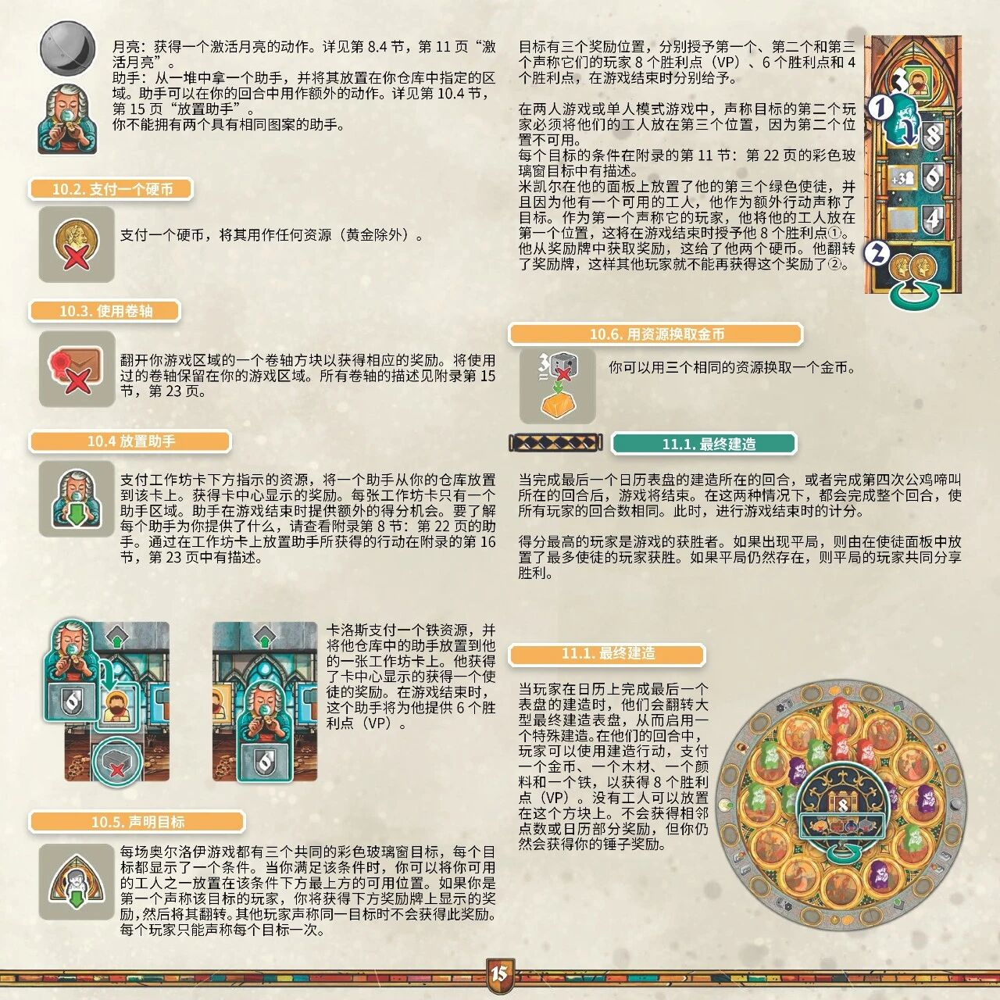
〔图左上为月亮图标与助手图标，是上一页“奖励类型”清单的延续〕月亮：获得一个激活月亮的动作。详见第 8.4 节，第 11 页“激活月亮”。
助手：从一堆中拿一个助手，并将其放置在你仓库中指定的区域。助手可以在你的回合中用作额外的动作。详见第 10.4 节，第 15 页“放置助手”。
你不能拥有两个具有相同图案的助手。
10.2. 支付一个硬币
支付一个硬币，将其用作任何资源（黄金除外）。
10.3. 使用卷轴
翻开你游戏区域的一个卷轴方块以获得相应的奖励。将使用过的卷轴保留在你的游戏区域。所有卷轴的描述见附录第 15 节，第 23 页。
10.4 放置助手
支付工作坊卡下方指示的资源，将一个助手从你的仓库放置到该卡上。获得卡中心显示的奖励。每张工作坊卡只有一个助手区域。助手在游戏结束时提供额外的得分机会。要了解每个助手为你提供了什么，请查看附录第 8 节：第 22 页的助手。通过在工作坊卡上放置助手所获得的行动在附录的第 16 节，第 23 页中有描述。
〔图卡洛斯把助手从仓库放到一张工作坊卡上的示例，支付的铁资源被红叉圈出，获得一个使徒的奖励格被圈出〕卡洛斯支付一个铁资源，并将他仓库中的助手放置到他的一张工作坊卡上。他获得了卡中心显示的获得一个使徒的奖励。在游戏结束时，这个助手将为他提供 6 个胜利点（VP）。
10.5. 声明目标
每场奥尔洛伊游戏都有三个共同的彩色玻璃窗目标，每个目标都显示了一个条件。当你满足该条件时，你可以将你可用的工人之一放置在该条件下方最上方的可用位置。如果你是第一个声称该目标的玩家，你将获得下方奖励牌上显示的奖励，然后将其翻转。其他玩家声称同一目标时不会获得此奖励。每个玩家只能声称每个目标一次。
（右栏续）目标有三个奖励位置，分别授予第一个、第二个和第三个声称它们的玩家 8 个胜利点（VP）、6 个胜利点和 4 个胜利点，在游戏结束时分别给予。
在两人游戏或单人模式游戏中，声称目标的第二个玩家必须将他们的工人放在第三个位置，因为第二个位置不可用。
每个目标的条件在附录的第 11 节：第 22 页的彩色玻璃窗目标中有描述。
米凯尔在他的面板上放置了他的第三个绿色使徒，并且因为他有一个可用的工人，他作为额外行动声称了目标。作为第一个声称它的玩家，他将他的工人放在第一个位置，这将在游戏结束时授予他 8 个胜利点①。他从奖励牌中获取奖励，这给了他两个硬币。他翻转了奖励牌，这样其他玩家就不能再获得这个奖励了②。
〔图目标奖励位竖条示例，①工人被放在最上方奖励位（盾牌 8），其下依次为盾牌 6 和盾牌 4，②奖励牌被翻转后露出两个硬币〕
10.6. 用资源换取金币
你可以用三个相同的资源换取一个金币。
11.1. 最终建造
当完成最后一个日历表盘的建造所在的回合，或者完成第四次公鸡啼叫所在的回合后，游戏将结束。在这两种情况下，都会完成整个回合，使所有玩家的回合数相同。此时，进行游戏结束时的计分。
得分最高的玩家是游戏的获胜者。如果出现平局，则由在使徒面板中放置了最多使徒的玩家获胜。如果平局仍然存在，则平局的玩家共同分享胜利。
11.1. 最终建造
〔转录注：原书此橙色小节标题的编号同样印为“11.1.”，与上方绿色标题编号重复，照原样转录〕
当玩家在日历上完成最后一个表盘的建造时，他们会翻转大型最终建造表盘，从而启用一个特殊建造。在他们的回合中，玩家可以使用建造行动，支付一个金币、一个木材、一个颜料和一个铁，以获得 8 个胜利点（VP）。没有工人可以放置在这个方块上。不会获得相邻点数或日历部分奖励，但你仍然会获得你的锤子奖励。
〔图大型最终建造表盘（天文钟年历盘）照片，中央翻转后的特殊建造格显示数字 8〕
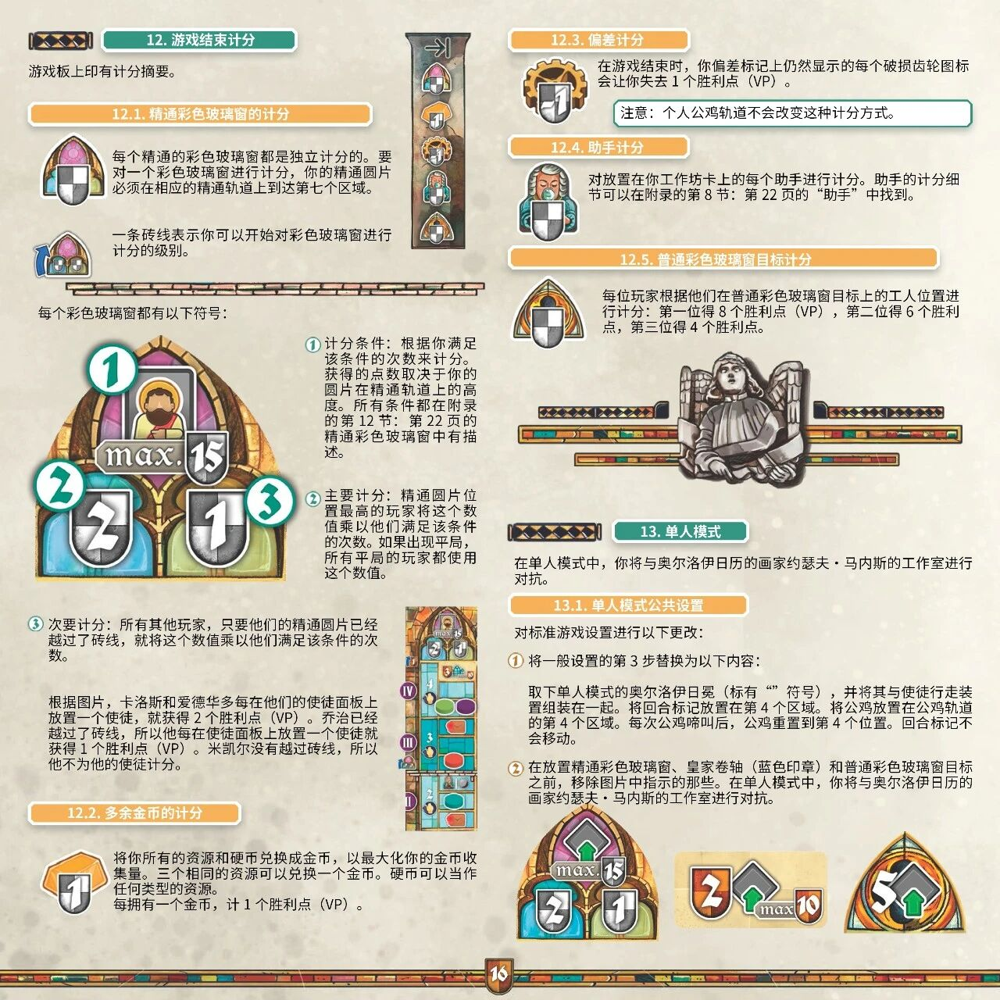
12. 游戏结束计分
游戏板上印有计分摘要。
12.1. 精通彩色玻璃窗的计分
每个精通的彩色玻璃窗都是独立计分的。要对一个彩色玻璃窗进行计分，你的精通圆片必须在相应的精通轨道上到达第七个区域。
一条砖线表示你可以开始对彩色玻璃窗进行计分的级别。
每个彩色玻璃窗都有以下符号：
〔图彩色玻璃窗计分符号示例——上方盾牌印"max.15"，下方两个盾牌分别印"2"和"1";①②③圆标对应下述三条说明〕
① 计分条件：根据你满足该条件的次数来计分。获得的点数取决于你的圆片在精通轨道上的高度。所有条件都在附录的第12节：第22页的精通彩色玻璃窗中有描述。
② 主要计分：精通圆片位置最高的玩家将这个数值乘以他们满足该条件的次数。如果出现平局，所有平局的玩家都使用这个数值。
③ 次要计分：所有其他玩家，只要他们的精通圆片已经越过了砖线，就将这个数值乘以他们满足该条件的次数。
〔图使徒面板（游戏板）局部照片，即下文"根据图片"所指的示例〕
根据图片，卡洛斯和爱德华多每在他们的使徒面板上放置一个使徒，就获得2个胜利点（VP）。乔治已经越过了砖线，所以他每在使徒面板上放置一个使徒就获得1个胜利点（VP）。米凯尔没有越过砖线，所以他不为他的使徒计分。
12.2. 多余金币的计分
将你所有的资源和硬币兑换成金币，以最大化你的金币收集量。三个相同的资源可以兑换一个金币。硬币可以当作任何类型的资源。
每拥有一个金币，计1个胜利点（VP）。
12.3. 偏差计分
在游戏结束时，你偏差标记上仍然显示的每个破损齿轮图标会让你失去1个胜利点（VP）。
注意：个人公鸡轨道不会改变这种计分方式。
12.4. 助手计分
对放置在你工作坊卡上的每个助手进行计分。助手的计分细节可以在附录的第8节：第22页的"助手"中找到。
12.5. 普通彩色玻璃窗目标计分
每位玩家根据他们在普通彩色玻璃窗目标上的工人位置进行计分：第一位得8个胜利点（VP），第二位得6个胜利点，第三位得4个胜利点。
13. 单人模式
在单人模式中，你将与奥尔洛伊日历的画家约瑟夫·马内斯的工作室进行对抗。
13.1. 单人模式公共设置
对标准游戏设置进行以下更改：
① 将一般设置的第3步替换为以下内容：
取下单人模式的奥尔洛伊日冕（标有"〔符号〕"符号），并将其与使徒行走装置组装在一起。将回合标记放置在第4个区域。将公鸡放置在公鸡轨道的第4个区域。每次公鸡啼叫后，公鸡重置到第4个位置。回合标记不会移动。
② 在放置精通彩色玻璃窗、皇家卷轴（蓝色印章）和普通彩色玻璃窗目标之前，移除图片中指示的那些。在单人模式中，你将与奥尔洛伊日历的画家约瑟夫·马内斯的工作室进行对抗。
〔图三个组件印样——精通彩色玻璃窗符号（印"max.15"及盾牌"2""1"）、皇家卷轴（印盾牌"2"、深色菱形配绿色向上箭头、"max.10"）、普通彩色玻璃窗目标（印"5"及深色菱形配绿色向上箭头）〕
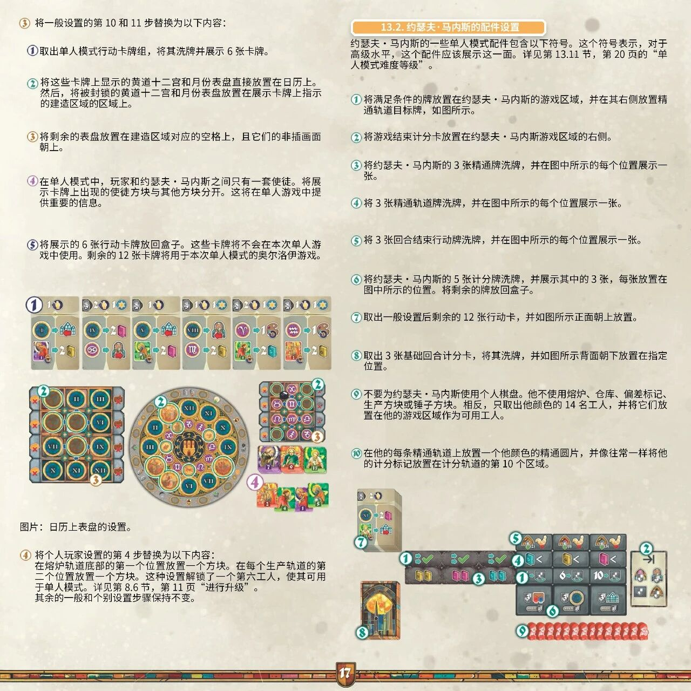
③ 将一般设置的第 10 和 11 步替换为以下内容：
① 取出单人模式行动卡牌组，将其洗牌并展示 6 张卡牌。
② 将这些卡牌上显示的黄道十二宫和月份表盘直接放置在日历上。然后，将被封锁的黄道十二宫和月份表盘放置在展示卡牌上指示的建造区域的区域上。
③ 将剩余的表盘放置在建造区域对应的空格上，且它们的非插画面朝上。
④ 在单人模式中，玩家和约瑟夫·马内斯之间只有一套使徒。将展示卡牌上出现的使徒方块与其他方块分开。这将在单人游戏中提供重要的信息。
⑤ 将展示的 6 张行动卡牌放回盒子。这些卡牌将不会在本次单人游戏中使用。剩余的 12 张卡牌将用于本次单人模式的奥尔洛伊游戏。
〔图单人模式设置配件照片——展示卡牌（圆标①）、建造区域板块、日历轮盘、黄道十二宫轮盘（圆标②③）、使徒卡（圆标③④）〕
图片：日历上表盘的设置。
④ 将个人玩家设置的第 4 步替换为以下内容：
在熔炉轨道底部的第一个位置放置一个方块。在每个生产轨道的第二个位置放置一个方块。这种设置解锁了一个第六工人，使其可用于单人模式。详见第 8.6 节，第 11 页"进行升级"。
其余的一般和个别设置步骤保持不变。
13.2. 约瑟夫·马内斯的配件设置
约瑟夫·马内斯的一些单人模式配件包含以下符号。这个符号表示，对于高级水平，这个配件应该展示这一面。详见第 13.11 节，第 20 页的"单人模式难度等级"。
① 将满足条件的牌放置在约瑟夫·马内斯的游戏区域，并在其右侧放置精通轨道目标牌，如图所示。
② 将游戏结束计分卡放置在约瑟夫·马内斯游戏区域的右侧。
③ 将约瑟夫·马内斯的 3 张精通牌洗牌，并在图中所示的每个位置展示一张。
④ 将 3 张精通轨道牌洗牌，并在图中所示的每个位置展示一张。
⑤ 将 3 张回合结束行动牌洗牌，并在图中所示的每个位置展示一张。
⑥ 将约瑟夫·马内斯的 5 张计分牌洗牌，并展示其中的 3 张，每张放置在图中所示的位置。将剩余的牌放回盒子。
⑦ 取出一般设置后剩余的 12 张行动卡，并如图所示正面朝上放置。
⑧ 取出 3 张基础回合计分卡，将其洗牌，并如图所示背面朝下放置在指定位置。
⑨ 不要为约瑟夫·马内斯使用个人棋盘。他不使用熔炉、仓库、偏差标记、生产方块或锤子方块。相反，只取出他颜色的 14 名工人，并将它们放置在他的游戏区域作为可用工人。
⑩ 在他的每条精通轨道上放置一个他颜色的精通圆片，并像往常一样将他的计分标记放置在计分轨道的第 10 个区域。
〔图约瑟夫·马内斯游戏区域的配件摆放照片，图中圆标①-⑨标示上文第①-⑨条所述配件的摆放位置〕
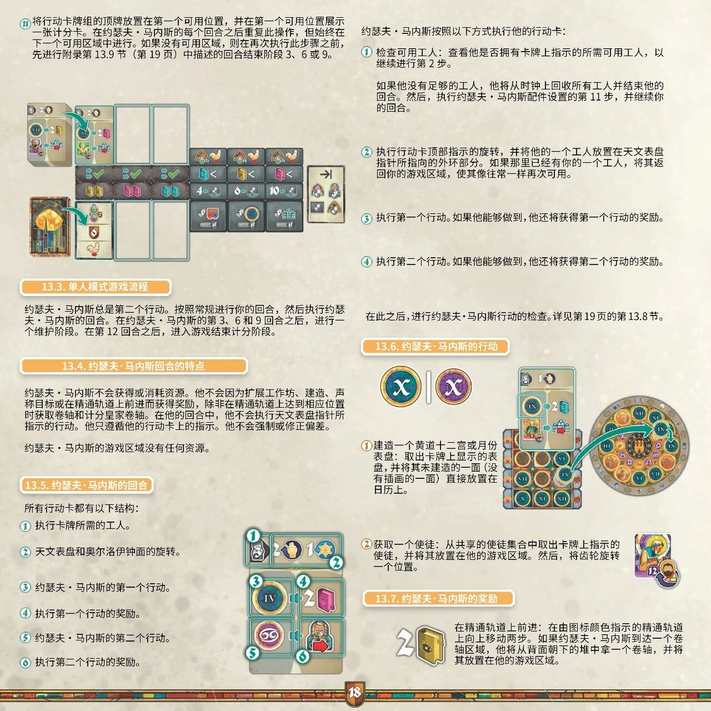
⑪ 将行动卡牌组的顶牌放置在第一个可用位置，并在第一个可用位置展示一张计分卡。在约瑟夫·马内斯的每个回合之后重复此操作，但始终在下一个可用区域中进行。如果没有可用区域，则在再次执行此步骤之前，先进行附录第 13.9 节（第 19 页）中描述的回合结束阶段 3、6 或 9。
〔图示例——将行动牌组顶牌移入游戏区第一个可用位置、并展示一张计分卡的摆放示意〕
约瑟夫·马内斯按照以下方式执行他的行动卡：
① 检查可用工人：查看他是否拥有卡牌上指示的所需可用工人，以继续进行第 2 步。
如果他没有足够的工人，他将从时钟上回收所有工人并结束他的回合。然后，执行约瑟夫·马内斯配件设置的第 11 步，并继续你的回合。
② 执行行动卡顶部指示的旋转，并将他的一个工人放置在天文表盘指针所指向的外环部分。如果那里已经有你的一个工人，将其返回你的游戏区域，使其像往常一样再次可用。
③ 执行第一个行动。如果他能够做到，他还将获得第一个行动的奖励。
④ 执行第二个行动。如果他能够做到，他还将获得第二个行动的奖励。
在此之后，进行约瑟夫·马内斯行动的检查。详见第 19 页的第 13.8 节。
13.3. 单人模式游戏流程
约瑟夫·马内斯总是第二个行动。按照常规进行你的回合，然后执行约瑟夫·马内斯的回合。在约瑟夫·马内斯的第 3、6 和 9 回合之后，进行一个维护阶段。在第 12 回合之后，进入游戏结束计分阶段。
13.4. 约瑟夫·马内斯回合的特点
约瑟夫·马内斯不会获得或消耗资源。他不会因为扩展工作坊、建造、声称目标或在精通轨道上前进而获得奖励，除非在精通轨道上达到相应位置时获取卷轴和计分皇家卷轴。在他的回合中，他不会执行天文表盘指针所指示的行动。他只遵循他的行动卡上的指示。他不会强制或修正偏差。
约瑟夫·马内斯的游戏区域没有任何资源。
13.5. 约瑟夫·马内斯的回合
所有行动卡都有以下结构：
① 执行卡牌所需的工人。
② 天文表盘和奥尔洛伊钟面的旋转。
③ 约瑟夫·马内斯的第一个行动。
④ 执行第一个行动的奖励。
⑤ 约瑟夫·马内斯的第二个行动。
⑥ 执行第二个行动的奖励。
〔图行动卡结构示例——卡面各部分用①—⑥圈号标注，与上方六项一一对应〕
13.6. 约瑟夫·马内斯的行动
〔图两个带有"X"符号的表盾示意（一个金色环、一个紫色环），表示黄道十二宫表盘与月份表盘〕
① 建造一个黄道十二宫或月份表盘：取出卡牌上显示的表盘，并将其未建造的一面（没有插画的一面）直接放置在日历上。
〔图示例——打出顶部显示 IX 的行动卡，将表盘放置到日历上，并在天文钟盘上按箭头旋转〕
② 获取一个使徒：从共享的使徒集合中取出卡牌上指示的使徒，并将其放置在他的游戏区域。然后，将齿轮旋转一个位置。
〔图使徒卡示例（卡上标有 12）与齿轮图标〕
13.7. 约瑟夫·马内斯的奖励
〔图奖励图标——2 与卷轴〕
在精通轨道上前进：在由图标颜色指示的精通轨道上向上移动两步。如果约瑟夫·马内斯到达一个卷轴区域，他将从背面朝下的堆中拿一个卷轴，并将其放置在他的游戏区域。
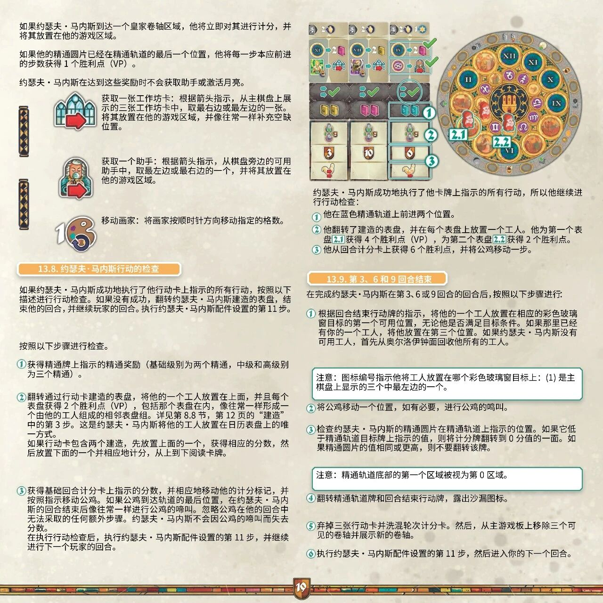
如果约瑟夫·马内斯到达一个皇家卷轴区域，他将立即对其进行计分，并将其放置在他的游戏区域。
如果他的精通圆片已经在精通轨道的最后一个位置，他将每一步本应前进的步数获得 1 个胜利点（VP）。
约瑟夫·马内斯在达到这些奖励时不会获取助手或激活月亮。
〔图彩色玻璃窗（工作坊）图标加红色箭头〕获取一张工作坊卡：根据箭头指示，从主棋盘上展示的三张工作坊卡中，取最右边或最左边的一张。将其放置在他的游戏区域，并像往常一样补充空缺位置。
〔图助手图标加红色箭头〕获取一个助手：根据箭头指示，从棋盘旁边的可用助手中，取最左边或最右边的一个，并将其放置在他的游戏区域。
〔图调色板图标（带数字与循环箭头）〕移动画家：将画家按顺时针方向移动指定的格数。
13.8. 约瑟夫·马内斯行动的检查
如果约瑟夫·马内斯成功地执行了他行动卡上指示的所有行动，按照以下描述进行行动检查。如果没有成功，翻转约瑟夫·马内斯建造的表盘，结束他的回合，并继续玩家的回合。执行约瑟夫·马内斯配件设置的第 11 步。
按照以下步骤进行检查。
① 获得精通牌上指示的精通奖励（基础级别为两个精通，中级和高级别为三个精通）。
② 翻转通过行动卡建造的表盘，将他的一个工人放置在上面，并且每个表盘获得 2 个胜利点（VP），包括那个表盘在内，像往常一样形成一个由他的工人组成的相邻表盘组。详见第 8.8 节，第 12 页的"建造"中的第 3 步。这是约瑟夫·马内斯将他的工人放置在日历表盘上的唯一方式。
如果行动卡包含两个建造，先放置上面的一个，获得相应的分数，然后放置下面的一个并相应地计分，从上到下阅读卡牌。
③ 获得基础回合计分卡上指示的分数，并相应地移动他的计分标记，并按照指示移动公鸡。如果公鸡到达轨道的最后位置，在约瑟夫·马内斯的回合结束后像往常一样进行公鸡的啼叫。忽略公鸡在他的回合中无法采取的任何额外步骤。约瑟夫·马内斯不会因公鸡的啼叫而失去分数。
在执行行动检查后，执行约瑟夫·马内斯配件设置的第 11 步，并继续进行下一个玩家的回合。
〔图13.8 示例——三张行动卡（带绿色对勾）与主棋盘/回合计分卡局部，圈号①②③标注所涉元素;右侧天文钟盘上以 2.1、2.2 标注两个表盘位置〕
约瑟夫·马内斯成功地执行了他卡牌上指示的所有行动，所以他继续进行行动检查：
① 他在蓝色精通轨道上前进两个位置。
② 他翻转了建造的表盘，并在每个表盘上放置一个工人。他为第一个表盘 2.1 获得 4 个胜利点（VP），为第二个表盘 2.2 获得 2 个胜利点。
③ 他从回合计分卡上获得 6 个胜利点，并将公鸡移动一步。
13.9. 第 3、6 和 9 回合结束
在完成约瑟夫·马内斯在第 3、6 或 9 回合的回合后，按照以下步骤进行：
① 根据回合结束行动牌的指示，将他的一个工人放置在相应的彩色玻璃窗目标的第一个可用位置，无论他是否满足目标条件。如果那里已经有你的一个工人，将他放置在第三个位置。如果约瑟夫·马内斯没有可用工人，首先从奥尔洛伊钟面回收他所有的工人。
注意：图标编号指示他将工人放置在哪个彩色玻璃窗目标上：（1) 是主棋盘上显示的三个中最左边的一个。
② 将公鸡移动一个位置，如有必要，进行公鸡的鸣叫。
③ 检查约瑟夫·马内斯的精通圆片在精通轨道上指示的位置。如果它低于精通轨道目标牌上指示的值，则将计分牌翻转到 0 分值的一面。如果精通圆片的值相同或更高，则不要翻转该牌。
注意：精通轨道底部的第一个区域被视为第 0 区域。
④ 翻转精通轨道牌和回合结束行动牌，露出沙漏图标。
⑤ 弃掉三张行动卡并洗混轮次计分卡。然后，从主游戏板上移除三个可见的卷轴并展示新的卷轴。
⑥ 执行约瑟夫·马内斯配件设置的第 11 步，然后进入你的下一个回合。
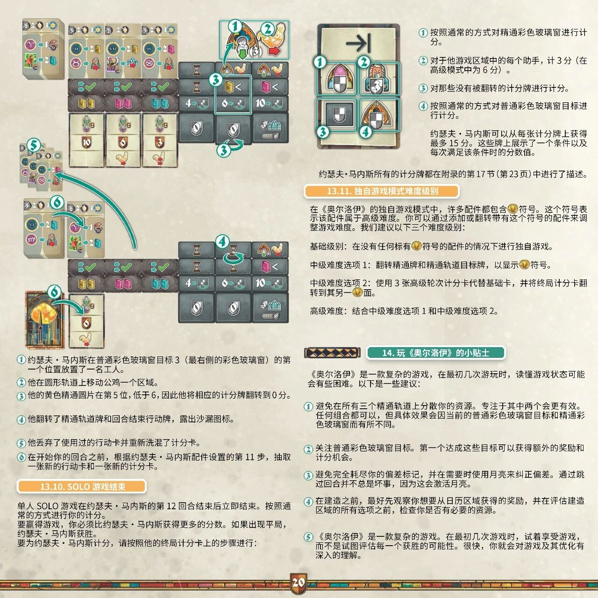
〔图约瑟夫·马内斯配件的计分示例照片，图上标注①—⑥，对应下方逐条说明〕
① 约瑟夫·马内斯在普通彩色玻璃窗目标 3(最右侧的彩色玻璃窗）的第一个位置放置了一名工人。
② 他在圆形轨道上移动公鸡一个区域。
③ 他的黄色精通圆片在第 5 位，低于 6，因此他将相应的计分牌翻转到 0 分。
④ 他翻转了精通轨道牌和回合结束行动牌，露出沙漏图标。
⑤ 他丢弃了使用过的行动卡并重新洗混了计分卡。
⑥ 在开始你的回合之前，根据约瑟夫·马内斯配件设置的第 11 步，抽取一张新的行动卡和一张新的计分卡。
13.10. SOLO 游戏结束
单人 SOLO 游戏在约瑟夫·马内斯的第 12 回合结束后立即结束。按照通常的方式进行你的计分。
要赢得游戏，你必须比约瑟夫·马内斯获得更多的分数。如果出现平局，约瑟夫·马内斯获胜。
要为约瑟夫·马内斯计分，请按照他的终局计分卡上的步骤进行：
〔图约瑟夫·马内斯的终局计分卡，卡上四格标注①—④，对应下方步骤〕
① 按照通常的方式对精通彩色玻璃窗进行计分。
② 对于他游戏区域中的每个助手，计 3 分（在高级模式中为 6 分）。
③ 对那些没有被翻转的计分牌进行计分。
④ 按照通常的方式对普通彩色玻璃窗目标进行计分。
约瑟夫·马内斯可以从每张计分牌上获得最多 15 分。这些牌上展示了一个条件以及每次满足该条件时的分数值。
约瑟夫·马内斯所有的计分牌都在附录的第 17 节（第 23 页）中进行了描述。
13.11. 独自游戏模式难度级别
在《奥尔洛伊》的独自游戏模式中，许多配件都包含〔困难符号〕图标。这个符号表示该配件属于高级难度。你可以通过添加或翻转带有这个符号的配件来调整游戏难度。我们建议以下三个难度级别：
基础级别：在没有任何标有〔困难符号〕图标的配件的情况下进行独自游戏。
中级难度选项 1:翻转精通牌和精通轨道目标牌，以显示〔困难符号〕图标。
中级难度选项 2:使用 3 张高级轮次计分卡代替基础卡，并将终局计分卡翻转到其另一〔困难符号〕面。
高级难度：结合中级难度选项 1 和中级难度选项 2。
14.玩《奥尔洛伊》的小贴士
《奥尔洛伊》是一款复杂的游戏，在最初几次游玩时，读懂游戏状态可能会有些困难。以下是一些建议：
① 避免在所有三个精通轨道上分散你的资源。专注于其中两个会更有效。任何组合都可以，但具体效果会因当前的普通彩色玻璃窗目标和精通彩色玻璃窗而有所不同。
② 关注普通彩色玻璃窗目标。第一个达成这些目标可以获得额外的奖励和计分机会。
③ 避免完全耗尽你的偏差标记，并在需要时使用月亮来纠正偏差。通过跳过回合并不是坏事，因为这会激活月亮。
④ 在建造之前，最好先观察你想要从日历区域获得的奖励，并在评估建造区域的所有选项之前，检查你是否有必要的资源。
⑤ 《奥尔洛伊》是一款复杂的游戏。在最初几次游戏时，试着享受游戏，而不是试图评估每一个获胜的可能性。很快，你就会对游戏及其优化有深入的理解。
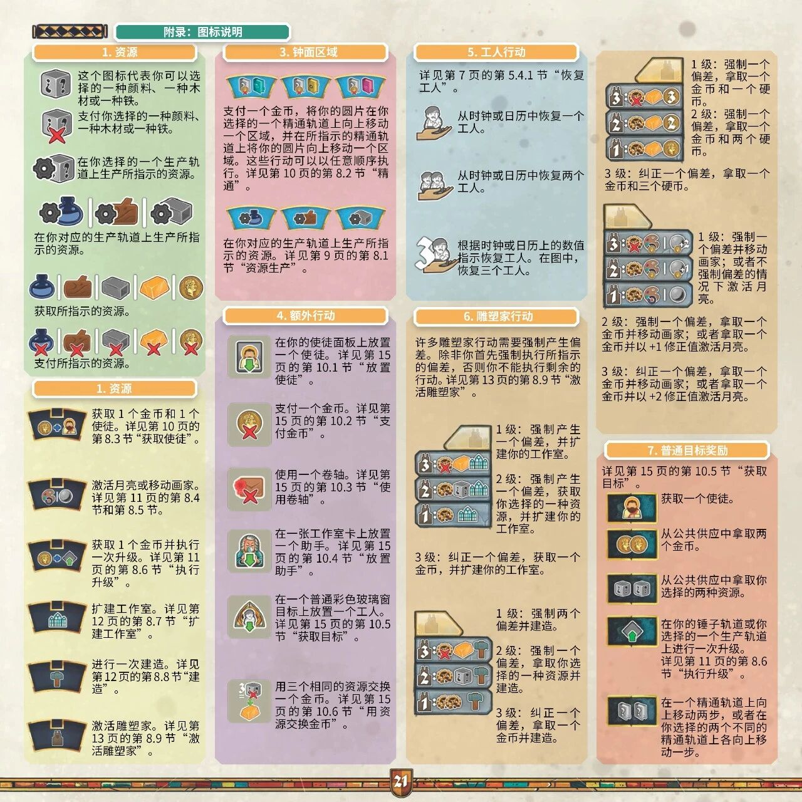
附录：图标说明
附录 1. 资源
〔图灰色问号方块图标〕
这个图标代表你可以选择的一种颜料、一种木材或一种铁。
〔图同上方块图标加红叉〕
支付你选择的一种颜料、一种木材或一种铁。
〔图齿轮与问号方块图标〕
在你选择的一个生产轨道上生产所指示的资源。
〔图三个图标：齿轮+颜料|齿轮+木材|齿轮+铁〕
在你对应的生产轨道上生产所指示的资源。
〔图五个资源图标：颜料|木材|铁|金块|金币〕
获取所指示的资源。
〔图同五个资源图标，各带红叉〕
支付所指示的资源。
附录 1. 资源 〔原书如此：此小节标题与上一小节重复，内容为奖励图标说明〕
〔图扇形奖励图标：金币+使徒〕
获取 1 个金币和 1 个使徒。详见第 10 页的第 8.3 节“获取使徒”。
〔图扇形奖励图标：画家|月亮〕
激活月亮或移动画家。详见第 11 页的第 8.4 节和第 8.5 节。
〔图扇形奖励图标：金币+升级箭头〕
获取 1 个金币并执行一次升级。详见第 11 页的第 8.6 节“执行升级”。
〔图扇形奖励图标：工作室〕
扩建工作室。详见第 12 页的第 8.7 节“扩建工作室”。
〔图扇形奖励图标：锤子〕
进行一次建造。详见第 12 页的第 8.8 节“建造”。
〔图扇形奖励图标：雕塑家〕
激活雕塑家。详见第 13 页的第 8.9 节“激活雕塑家”。
附录 3. 钟面区域
〔图三个钟面区域扇形图标，内为精通轨道牌〕
支付一个金币，将你的圆片在你选择的一个精通轨道上向上移动一个区域，并在所指示的精通轨道上将你的圆片向上移动一个区域。这些行动可以以任意顺序执行。详见第 10 页的第 8.2 节“精通”。
〔图三个钟面区域扇形图标，内为齿轮+颜料|齿轮+木材|齿轮+铁〕
在你对应的生产轨道上生产所指示的资源。详见第 9 页的第 8.1 节“资源生产”。
附录 4. 额外行动
〔图使徒卡图标〕
在你的使徒面板上放置一个使徒。详见第 15 页的第 10.1 节“放置使徒”。
〔图金币图标加红叉〕
支付一个金币。详见第 15 页的第 10.2 节“支付金币”。
〔图信封卷轴图标加红叉〕
使用一个卷轴。详见第 15 页的第 10.3 节“使用卷轴”。
〔图助手头像图标〕
在一张工作室卡上放置一个助手。详见第 15 页的第 10.4 节“放置助手”。
〔图彩色玻璃窗目标图标〕
在一个普通彩色玻璃窗目标上放置一个工人。详见第 15 页的第 10.5 节“获取目标”。
〔图数字3与资源方块换金币图标〕
用三个相同的资源交换一个金币。详见第 15 页的第 10.6 节“用资源交换金币”。
附录 5. 工人行动
详见第 7 页的第 5.4.1 节“恢复工人”。
〔图手掌托 1 名工人图标〕
从时钟或日历中恢复一个工人。
〔图手掌托 2 名工人图标〕
从时钟或日历中恢复两个工人。
〔图手掌托工人图标，带数字 3〕
根据时钟或日历上的数值指示恢复工人。在图中，恢复三个工人。
附录 6. 雕塑家行动
许多雕塑家行动需要强制产生偏差。除非你首先强制执行所指示的偏差，否则你不能执行剩余的行动。详见第 13 页的第 8.9 节“激活雕塑家”。
〔图雕塑家行动牌，标 3/2/1 三级〕
1 级：强制产生一个偏差，并扩建你的工作室。
2 级：强制产生一个偏差，获取你选择的一种资源，并扩建你的工作室。
3 级：纠正一个偏差，获取一个金币，并扩建你的工作室。
〔图雕塑家行动牌，标 3/2/1 三级〕
1 级：强制两个偏差并建造。
2 级：强制一个偏差，拿取你选择的一种资源并建造。
3 级：纠正一个偏差，拿取一个金币并建造。
〔图雕塑家行动牌，标 3/2/1 三级，右侧为金币与硬币图标〕
1 级：强制一个偏差，拿取一个金币和一个硬币。
2 级：强制一个偏差，拿取一个金币和两个硬币。
3 级：纠正一个偏差，拿取一个金币和三个硬币。
〔图雕塑家行动牌，标 3/2/1 三级，右侧为画家调色板与月亮（+2/+1 修正值）图标〕
1 级：强制一个偏差并移动画家;或者不强制偏差的情况下激活月亮。
2 级：强制一个偏差，拿取一个金币并移动画家;或者拿取一个金币并以 +1 修正值激活月亮。
3 级：纠正一个偏差，拿取一个金币并移动画家;或者拿取一个金币并以 +2 修正值激活月亮。
附录 7. 普通目标奖励
详见第 15 页的第 10.5 节“获取目标”。
〔图使徒图标〕
获取一个使徒。
〔图两枚金币图标〕
从公共供应中拿取两个金币。
〔图两个资源方块图标〕
从公共供应中拿取你选择的两种资源。
〔图绿色升级箭头图标〕
在你的锤子轨道或你选择的一个生产轨道上进行一次升级。详见第 11 页的第 8.6 节“执行升级”。
〔图两个精通轨道牌图标〕
在一个精通轨道上向上移动两步，或者在你选择的两个不同的精通轨道上各向上移动一步。
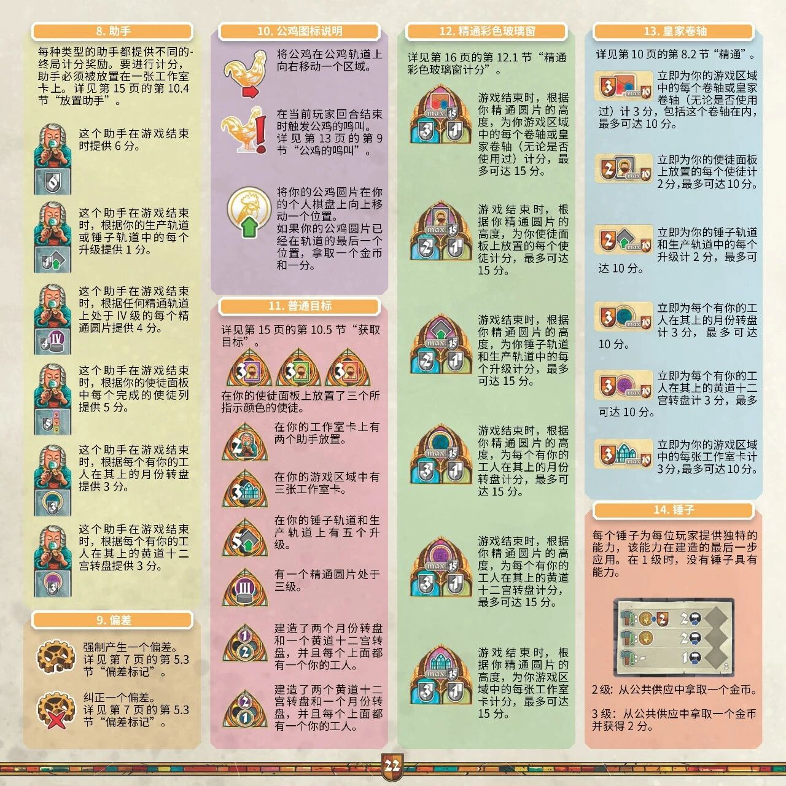
附录 8. 助手
每种类型的助手都提供不同的终局计分奖励。要进行计分，助手必须被放置在一张工作室卡上。详见第 15 页的第 10.4 节“放置助手”。
〔图助手图标，老人形象，下方盾牌标"6"〕这个助手在游戏结束时提供 6 分。
〔图助手图标，盾牌标"1"，图为轨道升级〕这个助手在游戏结束时，根据你的生产轨道或锤子轨道中的每个升级提供 1 分。
〔图助手图标，盾牌标"4"与"IV"〕这个助手在游戏结束时，根据任何精通轨道上处于 IV 级的每个精通圆片提供 4 分。
〔图助手图标，盾牌标"5"，图为使徒面板〕这个助手在游戏结束时，根据你的使徒面板中每个完成的使徒列提供 5 分。
〔图助手图标，盾牌标"3"，图为月份转盘〕这个助手在游戏结束时，根据每个有你的工人在其上的月份转盘提供 3 分。
〔图助手图标，盾牌标"3"，图为黄道十二宫转盘〕这个助手在游戏结束时，根据每个有你的工人在其上的黄道十二宫转盘提供 3 分。
附录 9. 偏差
〔图金色齿轮图标〕强制产生一个偏差。详见第 7 页的第 5.3 节“偏差标记”。
〔图金色齿轮加红叉图标〕纠正一个偏差。详见第 7 页的第 5.3 节“偏差标记”。
附录 10. 公鸡图标说明
〔图公鸡图标，下方红色向右箭头〕将公鸡在公鸡轨道上向右移动一个区域。
〔图公鸡图标带红色感叹号〕在当前玩家回合结束时触发公鸡的鸣叫。详见第 13 页的第 9 节“公鸡的鸣叫”。
〔图圆形公鸡徽章，下方绿色向上箭头〕将你的公鸡圆片在你的个人棋盘上向上移动一个位置。如果你的公鸡圆片已经在轨道的最后一个位置，拿取一个金币和一分。
附录 11. 普通目标
详见第 15 页的第 10.5 节“获取目标”。
〔图三枚目标板块，盾牌均标"5"，肖像分别为紫色、绿色、红色〕在你的使徒面板上放置了三个所示颜色的使徒。
〔图目标板块，盾牌标"2"，图为助手〕在你的工作室卡上有两个助手放置。
〔图目标板块，盾牌标"3"，图为工作室卡〕在你的游戏区域中有三张工作室卡。
〔图目标板块，盾牌标"5"，图为锤子与绿色升级箭头〕在你的锤子轨道和生产轨道上有五个升级。
〔图目标板块，标有罗马数字"III"与精通圆片〕有一个精通圆片处于三级。
〔图目标板块，转盘上标有数字"1""2"〕建造了两个月份转盘和一个黄道十二宫转盘，并且每个上面都有一个你的工人。
〔图目标板块，转盘上标有数字"2""1"〕建造了两个黄道十二宫转盘和一个月份转盘，并且每个上面都有一个你的工人。
附录 12. 精通彩色玻璃窗
详见第 16 页的第 12.1 节“精通彩色玻璃窗计分”。
〔图彩色玻璃窗图标，标有"max. 15"与盾牌"3""1"〕游戏结束时，根据你精通圆片的高度，为你游戏区域中的每个卷轴或皇家卷轴（无论是否使用过）计分，最多可达 15 分。
〔图彩色玻璃窗图标，标有"max. 15"与盾牌"2""1"〕游戏结束时，根据你精通圆片的高度，为你使徒面板上放置的每个使徒计分，最多可达 15 分。
〔图彩色玻璃窗图标，标有"max. 15"与盾牌"2""1"〕游戏结束时，根据你精通圆片的高度，为你锤子轨道和生产轨道中的每个升级计分，最多可达 15 分。
〔图彩色玻璃窗图标，标有"max. 15"与盾牌"3""1"〕游戏结束时，根据你精通圆片的高度，为每个有你的工人在其上的月份转盘计分，最多可达 15 分。
〔图彩色玻璃窗图标，标有"max. 15"与盾牌"3""1"〕游戏结束时，根据你精通圆片的高度，为每个有你的工人在其上的黄道十二宫转盘计分，最多可达 15 分。
〔图彩色玻璃窗图标，标有"max. 15"与盾牌"3""1"〕游戏结束时，根据你精通圆片的高度，为你游戏区域中的每张工作室卡计分，最多可达 15 分。
附录 13. 皇家卷轴
详见第 10 页的第 8.2 节“精通”。
〔图皇家卷轴板块，盾牌标"3"与"max. 10"〕立即为你的游戏区域中的每个卷轴或皇家卷轴（无论是否使用过）计 3 分，包括这个卷轴在内，最多可达 10 分。
〔图皇家卷轴板块，盾牌标"2"与"max. 10"〕立即为你的使徒面板上放置的每个使徒计 2 分，最多可达 10 分。
〔图皇家卷轴板块，盾牌标"2"与"max. 10"〕立即为你的锤子轨道和生产轨道中的每个升级计 2 分，最多可达 10 分。
〔图皇家卷轴板块，盾牌标"3"与"max. 10"〕立即为每个有你的工人在其上的月份转盘计 3 分，最多可达 10 分。
〔图皇家卷轴板块，盾牌标"3"与"max. 10"〕立即为每个有你的工人在其上的黄道十二宫转盘计 3 分，最多可达 10 分。
〔图皇家卷轴板块，盾牌标"3"与"max. 10"〕立即为你的游戏区域中的每张工作室卡计 3 分，最多可达 10 分。
附录 14. 锤子
每个锤子为每位玩家提供独特的能力，该能力在建造的最后一步应用。在 1 级时，没有锤子具有能力。
〔图锤子升级轨道组件照片，三行自上而下分别标有"2""2""1"及金币、盾牌等图标，右侧菱形孔位标"2"〕
2级：从公共供应中拿取一个金币。
3级：从公共供应中拿取一个金币并获得 2 分。
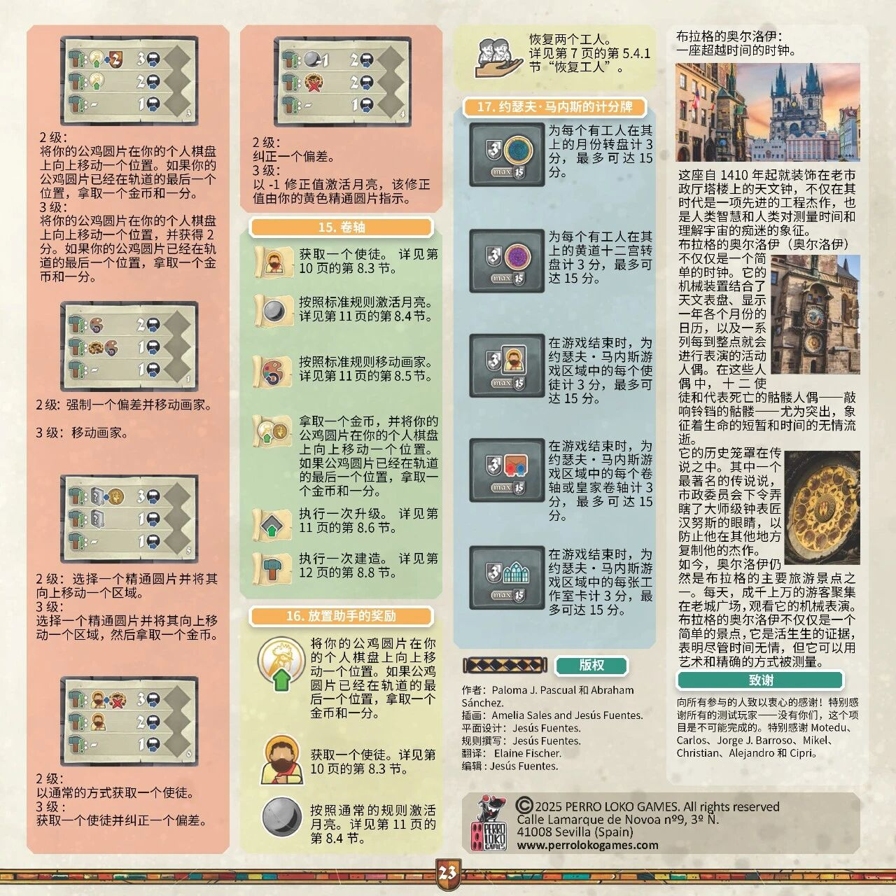
〔编辑注：以下五个锤子条目为第 22 页“14. 锤子”小节的延续，原书本页未重复小节标题〕
〔图锤子轨道组件照片，三行右侧自上而下标“3”“2”“1”，图板右下角标“3”;首行为绿色箭头、金币与盾牌“2”图标〕
2 级：
将你的公鸡圆片在你的个人棋盘上向上移动一个位置。如果你的公鸡圆片已经在轨道的最后一个位置，拿取一个金币和一分。
3 级：
将你的公鸡圆片在你的个人棋盘上向上移动一个位置，并获得 2 分。如果你的公鸡圆片已经在轨道的最后一个位置，拿取一个金币和一分。
〔图锤子轨道组件照片，三行右侧自上而下标“2”“1”“1”，图板右下角标“1”;首行为画家调色板图标〕
2 级：强制一个偏差并移动画家。
3 级：移动画家。
〔图锤子轨道组件照片，三行右侧自上而下标“3”“1”“1”，图板右下角标“5”;首行为精通圆片与金币图标〕
2 级：选择一个精通圆片并将其向上移动一个区域。
3 级：
选择一个精通圆片并将其向上移动一个区域，然后拿取一个金币。
〔图锤子轨道组件照片，三行右侧自上而下标“3”“2”“1”，图板右下角标“6”;首行为使徒与偏差齿轮图标〕
2 级：
以通常的方式获取一个使徒。
3 级：
获取一个使徒并纠正一个偏差。
〔图锤子轨道组件照片，三行右侧自上而下标“2”“2”“1”，图板右下角标“4”;首行为月亮与“-1”图标〕
2 级：
纠正一个偏差。
3 级：
以 -1 修正值激活月亮，该修正值由你的黄色精通圆片指示。
附录 15. 卷轴
〔图卷轴图标，图为使徒肖像〕获取一个使徒。详见第 10 页的第 8.3 节。
〔图卷轴图标，图为月亮〕按照标准规则激活月亮。详见第 11 页的第 8.4 节。
〔图卷轴图标，图为画家调色板〕按照标准规则移动画家。详见第 11 页的第 8.5 节。
〔图卷轴图标，图为金币与公鸡圆片〕拿取一个金币，并将你的公鸡圆片在你的个人棋盘上向上移动一个位置。如果公鸡圆片已经在轨道的最后一个位置，拿取一个金币和一分。
〔图卷轴图标，图为升级箭头〕执行一次升级。详见第 11 页的第 8.6 节。
〔图卷轴图标，图为锤子〕执行一次建造。详见第 12 页的第 8.8 节。
附录 16. 放置助手的奖励
〔图圆形公鸡徽章，下方绿色向上箭头〕将你的公鸡圆片在你的个人棋盘上向上移动一个位置。如果公鸡圆片已经在轨道的最后一个位置，拿取一个金币和一分。
〔图使徒肖像〕获取一个使徒。详见第 10 页的第 8.3 节。
〔图月亮图标〕按照通常的规则激活月亮。详见第 11 页的第 8.4 节。
〔图手掌托两个工人图标〕恢复两个工人。详见第 7 页的第 5.4.1 节“恢复工人”。
〔编辑注：上条在原书中排于本页中栏顶部，底色与“16. 放置助手的奖励”栏框相同，为该栏延续〕
附录 17. 约瑟夫·马内斯的计分牌
〔图计分牌板块，盾牌标“3”，图为月份转盘，标“max. 15”〕为每个有工人在其上的月份转盘计 3 分，最多可达 15 分。
〔图计分牌板块，盾牌标“3”，图为黄道十二宫转盘，标“max. 15”〕为每个有工人在其上的黄道十二宫转盘计 3 分，最多可达 15 分。
〔图计分牌板块，盾牌标“3”，图为使徒肖像，标“max. 15”〕在游戏结束时，为约瑟夫·马内斯游戏区域中的每个使徒计 3 分，最多可达 15 分。
〔图计分牌板块，盾牌标“3”，图为卷轴，标“max. 15”〕在游戏结束时，为约瑟夫·马内斯游戏区域中的每个卷轴或皇家卷轴计 3 分，最多可达 15 分。
〔图计分牌板块，盾牌标“3”，图为工作室卡，标“max. 15”〕在游戏结束时，为约瑟夫·马内斯游戏区域中的每张工作室卡计 3 分，最多可达 15 分。
布拉格的奥尔洛伊：一座超越时间的时钟。
〔图布拉格老城广场与蒂恩教堂照片，无规则文字〕
这座自 1410 年起就装饰在老市政厅塔楼上的天文钟，不仅在其时代是一项先进的工程杰作，也是人类智慧和人类对测量时间和理解宇宙的痴迷的象征。
布拉格的奥尔洛伊（奥尔洛伊）不仅仅是一个简单的时钟。它的机械装置结合了天文表盘、显示一年各个月份的日历，以及一系列每到整点就会进行表演的活动人偶。在这些人偶中，十二使徒和代表死亡的骷髅人偶——敲响铃铛的骷髅——尤为突出，象征着生命的短暂和时间的无情流逝。
〔图天文钟钟面照片，无规则文字〕
它的历史笼罩在传说之中。其中一个最著名的传说说，市政委员会下令弄瞎了大师级钟表匠汉努斯的眼睛，以防止他在其他地方复制他的杰作。
如今，奥尔洛伊仍然是布拉格的主要旅游景点之一。每天，成千上万的游客聚集在老城广场，观看它的机械表演。布拉格的奥尔洛伊不仅仅是一个简单的景点，它是活生生的证据，表明尽管时间无情，但它可以用艺术和精确的方式被测量。
版权
作者：Paloma J. Pascual 和 Abraham Sánchez.
插画：Amelia Sales and Jesús Fuentes.
平面设计：Jesús Fuentes.
规则撰写：Jesús Fuentes.
翻译：Elaine Fischer.
编辑：Jesús Fuentes.
致谢
向所有参与的人致以衷心的感谢！特别感谢所有的测试玩家——没有你们，这个项目是不可能完成的。特别感谢 Motedu、Carlos、Jorge J. Barroso、Mikel、Christian、Alejandro 和 Cipri。
〔图出版方 Perro Loko Games 标志〕页脚出版信息：
© 2025 PERRO LOKO GAMES. All rights reserved
Calle Lamarque de Novoa nº9, 3º N.
41008 Sevilla (Spain)
www.perrolokogames.com
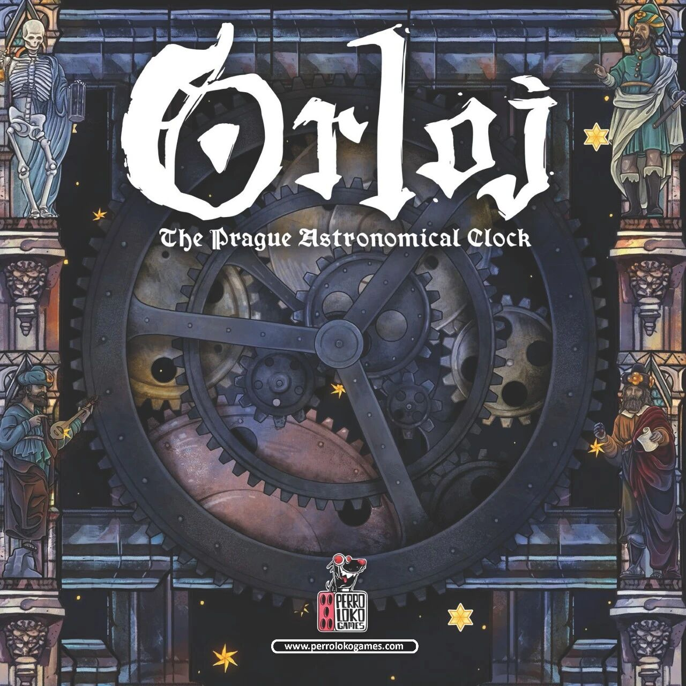
〔本页为全书封面图版页（扫描件最后一页），无中文正文，无小节编号。以下照录页面可见文字。〕
- Orloj
- The Prague Astronomical Clock
- PERRO LOKO GAMES
- www.perrolokogames.com
〔图封面整页插画——布拉格天文钟内部齿轮机构特写，四周环绕天文钟雕像装饰;页面上部中央为书名"Orloj"(哥特体）及英文副标题"The Prague Astronomical Clock"，下部中央为出版社 Perro Loko Games 标志及圆角框内网址"www.perrolokogames.com"。〕